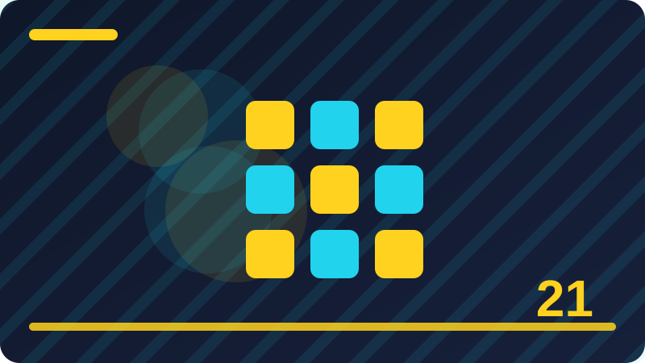

Chapter 21: Enums and Associated Values

Section 1: What an Enum Is
An enum, short for enumeration, is a type that lists a fixed set of possible values, so a variable of that type can only hold one of those listed values. Think of a traffic light that can only be red, amber, or green: there is no fourth colour that makes sense, and the program should not have to guess. Enums give that closed list a name in Swift, which makes the code clearer and helps the compiler catch mistakes early.
Think of what an enum is as a way of giving a name to an idea that your program already uses, so the idea is easy to recognise when you meet it again later. When you read code that uses what an enum is, slow down and ask what choice is being made, what information travels with that choice, and what should happen for each possible outcome. That habit turns a short example into a mental model you can reuse. You do not need to remember every detail at once. Start with the simplest case, run it, and then add one small variation. Each variation teaches you something the definition alone cannot, because you see the result change in front of you.
enum TrafficLight {
case red, amber, green
}
let light = TrafficLight.amber
print(light)Before you look at the code, say in plain words what you expect it to do. Then read it line by line and match each line to that expectation. If a line surprises you, that surprise is useful: it shows exactly where your picture of what an enum is differs from how Swift actually works. Change one value, run the example again in your head or in a playground, and notice what stays the same and what changes. This small experiment habit is how beginners become confident programmers, because confidence comes from tested understanding rather than from memorising rules.
A common mistake with what an enum is is to rush past the simple case and try to combine several new ideas at once. When the result is wrong, it is then hard to tell which idea caused the problem. Keep your first attempt small and clear, even if it looks too easy. Give your values honest names, keep each step on its own line where that helps, and check the result before you add the next feature. If you get stuck, explain the code out loud as if you were teaching a friend. The sentence where you hesitate usually points to the part you need to practise again.
To make what an enum is stick, try a tiny task of your own after this section. Invent a small example from everyday life, write the code for it, and predict the output before you run it. Then compare your prediction with the real result and write down, in one sentence, what you learned from any difference. Over time, those small sentences build a personal guide that is far more useful than notes copied from someone else. Good Swift code is not clever code. It is code that a future reader, including your future self, can follow without guessing.
Check: In your own words, what is an enum and why is a fixed list useful?
Section 2: Why Enums Beat Plain Strings
Using plain strings such as "red" or "Red" for choices invites spelling mistakes, because Swift treats "red" and "reed" as two different strings and cannot tell you that one is a typo. Enums remove that danger: you choose from a real list, and a misspelled case simply does not compile. The result is code that is easier to read, easier to change, and safer to refactor, because renaming a case updates every use.
Think of why enums beat plain strings as a way of giving a name to an idea that your program already uses, so the idea is easy to recognise when you meet it again later. When you read code that uses why enums beat plain strings, slow down and ask what choice is being made, what information travels with that choice, and what should happen for each possible outcome. That habit turns a short example into a mental model you can reuse. You do not need to remember every detail at once. Start with the simplest case, run it, and then add one small variation. Each variation teaches you something the definition alone cannot, because you see the result change in front of you.
enum Direction {
case north, south, east, west
}
let heading = Direction.north
print(heading)Before you look at the code, say in plain words what you expect it to do. Then read it line by line and match each line to that expectation. If a line surprises you, that surprise is useful: it shows exactly where your picture of why enums beat plain strings differs from how Swift actually works. Change one value, run the example again in your head or in a playground, and notice what stays the same and what changes. This small experiment habit is how beginners become confident programmers, because confidence comes from tested understanding rather than from memorising rules.
A common mistake with why enums beat plain strings is to rush past the simple case and try to combine several new ideas at once. When the result is wrong, it is then hard to tell which idea caused the problem. Keep your first attempt small and clear, even if it looks too easy. Give your values honest names, keep each step on its own line where that helps, and check the result before you add the next feature. If you get stuck, explain the code out loud as if you were teaching a friend. The sentence where you hesitate usually points to the part you need to practise again.
To make why enums beat plain strings stick, try a tiny task of your own after this section. Invent a small example from everyday life, write the code for it, and predict the output before you run it. Then compare your prediction with the real result and write down, in one sentence, what you learned from any difference. Over time, those small sentences build a personal guide that is far more useful than notes copied from someone else. Good Swift code is not clever code. It is code that a future reader, including your future self, can follow without guessing.
Check: Why is an enum safer than a string when you represent a choice?
Section 3: Declaring Your First Enum
Declaring an enum starts with the keyword enum, followed by a name that begins with a capital letter, and then a body in braces that lists the cases. Each case is introduced with the keyword case, and you may list several cases on one line separated by commas or put each on its own line. Swift style prefers a singular, descriptive name, such as Day or PaymentMethod, because the type describes one value at a time.
Think of declaring your first enum as a way of giving a name to an idea that your program already uses, so the idea is easy to recognise when you meet it again later. When you read code that uses declaring your first enum, slow down and ask what choice is being made, what information travels with that choice, and what should happen for each possible outcome. That habit turns a short example into a mental model you can reuse. You do not need to remember every detail at once. Start with the simplest case, run it, and then add one small variation. Each variation teaches you something the definition alone cannot, because you see the result change in front of you.
enum Day {
case monday, tuesday, wednesday
}
let today = Day.monday
print(today)Before you look at the code, say in plain words what you expect it to do. Then read it line by line and match each line to that expectation. If a line surprises you, that surprise is useful: it shows exactly where your picture of declaring your first enum differs from how Swift actually works. Change one value, run the example again in your head or in a playground, and notice what stays the same and what changes. This small experiment habit is how beginners become confident programmers, because confidence comes from tested understanding rather than from memorising rules.
A common mistake with declaring your first enum is to rush past the simple case and try to combine several new ideas at once. When the result is wrong, it is then hard to tell which idea caused the problem. Keep your first attempt small and clear, even if it looks too easy. Give your values honest names, keep each step on its own line where that helps, and check the result before you add the next feature. If you get stuck, explain the code out loud as if you were teaching a friend. The sentence where you hesitate usually points to the part you need to practise again.
To make declaring your first enum stick, try a tiny task of your own after this section. Invent a small example from everyday life, write the code for it, and predict the output before you run it. Then compare your prediction with the real result and write down, in one sentence, what you learned from any difference. Over time, those small sentences build a personal guide that is far more useful than notes copied from someone else. Good Swift code is not clever code. It is code that a future reader, including your future self, can follow without guessing.
Check: How do you declare a simple enum with three cases?
Section 4: Cases and Case Names
Case names in Swift are written in lowerCamelCase, like firstClass or expressDelivery, which keeps them visually different from type names. A good case name describes the choice itself, not the type around it, so you write .expressDelivery rather than .deliveryExpressDelivery. Short names are fine when the enum gives the context, but the name must still be clear when read on its own in a switch statement.
Think of cases and case names as a way of giving a name to an idea that your program already uses, so the idea is easy to recognise when you meet it again later. When you read code that uses cases and case names, slow down and ask what choice is being made, what information travels with that choice, and what should happen for each possible outcome. That habit turns a short example into a mental model you can reuse. You do not need to remember every detail at once. Start with the simplest case, run it, and then add one small variation. Each variation teaches you something the definition alone cannot, because you see the result change in front of you.
enum Ticket {
case standard, firstClass, student
}
let ticket = Ticket.firstClass
print(ticket)Before you look at the code, say in plain words what you expect it to do. Then read it line by line and match each line to that expectation. If a line surprises you, that surprise is useful: it shows exactly where your picture of cases and case names differs from how Swift actually works. Change one value, run the example again in your head or in a playground, and notice what stays the same and what changes. This small experiment habit is how beginners become confident programmers, because confidence comes from tested understanding rather than from memorising rules.
A common mistake with cases and case names is to rush past the simple case and try to combine several new ideas at once. When the result is wrong, it is then hard to tell which idea caused the problem. Keep your first attempt small and clear, even if it looks too easy. Give your values honest names, keep each step on its own line where that helps, and check the result before you add the next feature. If you get stuck, explain the code out loud as if you were teaching a friend. The sentence where you hesitate usually points to the part you need to practise again.
To make cases and case names stick, try a tiny task of your own after this section. Invent a small example from everyday life, write the code for it, and predict the output before you run it. Then compare your prediction with the real result and write down, in one sentence, what you learned from any difference. Over time, those small sentences build a personal guide that is far more useful than notes copied from someone else. Good Swift code is not clever code. It is code that a future reader, including your future self, can follow without guessing.
Check: What naming style should enum cases use, and why does it matter?
Section 5: Using an Enum Value
To use an enum value, you write the type name, a dot, and the case, such as Compass.north, or you use shorthand .north when Swift already knows the expected type. Shorthand is common in function arguments and variable declarations with an explicit type, and it keeps the code short without losing clarity. Once a value is stored, you can pass it around, compare it, and print it just like any other value.
Think of using an enum value as a way of giving a name to an idea that your program already uses, so the idea is easy to recognise when you meet it again later. When you read code that uses using an enum value, slow down and ask what choice is being made, what information travels with that choice, and what should happen for each possible outcome. That habit turns a short example into a mental model you can reuse. You do not need to remember every detail at once. Start with the simplest case, run it, and then add one small variation. Each variation teaches you something the definition alone cannot, because you see the result change in front of you.
enum Compass {
case north, south, east, west
}
let direction: Compass = .east
print(direction)Before you look at the code, say in plain words what you expect it to do. Then read it line by line and match each line to that expectation. If a line surprises you, that surprise is useful: it shows exactly where your picture of using an enum value differs from how Swift actually works. Change one value, run the example again in your head or in a playground, and notice what stays the same and what changes. This small experiment habit is how beginners become confident programmers, because confidence comes from tested understanding rather than from memorising rules.
A common mistake with using an enum value is to rush past the simple case and try to combine several new ideas at once. When the result is wrong, it is then hard to tell which idea caused the problem. Keep your first attempt small and clear, even if it looks too easy. Give your values honest names, keep each step on its own line where that helps, and check the result before you add the next feature. If you get stuck, explain the code out loud as if you were teaching a friend. The sentence where you hesitate usually points to the part you need to practise again.
To make using an enum value stick, try a tiny task of your own after this section. Invent a small example from everyday life, write the code for it, and predict the output before you run it. Then compare your prediction with the real result and write down, in one sentence, what you learned from any difference. Over time, those small sentences build a personal guide that is far more useful than notes copied from someone else. Good Swift code is not clever code. It is code that a future reader, including your future self, can follow without guessing.
Check: What is enum shorthand, and when can you use it?
Section 6: Switch Over an Enum
A switch statement is the natural partner of an enum, because it lets you write one branch for each case and handle each choice differently. Swift checks that you have covered every case, so a missing branch is a compile-time error rather than a bug discovered by a user. Inside each branch you write the code for that case only, which keeps the logic tidy and easy to follow.
Think of switch over an enum as a way of giving a name to an idea that your program already uses, so the idea is easy to recognise when you meet it again later. When you read code that uses switch over an enum, slow down and ask what choice is being made, what information travels with that choice, and what should happen for each possible outcome. That habit turns a short example into a mental model you can reuse. You do not need to remember every detail at once. Start with the simplest case, run it, and then add one small variation. Each variation teaches you something the definition alone cannot, because you see the result change in front of you.
enum Weather {
case sunny, rainy, cloudy
}
let weather = Weather.rainy
switch weather {
case .sunny: print("Wear sunglasses")
case .rainy: print("Take an umbrella")
case .cloudy: print("A light jacket will do")
}Before you look at the code, say in plain words what you expect it to do. Then read it line by line and match each line to that expectation. If a line surprises you, that surprise is useful: it shows exactly where your picture of switch over an enum differs from how Swift actually works. Change one value, run the example again in your head or in a playground, and notice what stays the same and what changes. This small experiment habit is how beginners become confident programmers, because confidence comes from tested understanding rather than from memorising rules.
A common mistake with switch over an enum is to rush past the simple case and try to combine several new ideas at once. When the result is wrong, it is then hard to tell which idea caused the problem. Keep your first attempt small and clear, even if it looks too easy. Give your values honest names, keep each step on its own line where that helps, and check the result before you add the next feature. If you get stuck, explain the code out loud as if you were teaching a friend. The sentence where you hesitate usually points to the part you need to practise again.
To make switch over an enum stick, try a tiny task of your own after this section. Invent a small example from everyday life, write the code for it, and predict the output before you run it. Then compare your prediction with the real result and write down, in one sentence, what you learned from any difference. Over time, those small sentences build a personal guide that is far more useful than notes copied from someone else. Good Swift code is not clever code. It is code that a future reader, including your future self, can follow without guessing.
Check: Why does switch work especially well with enums?
Section 7: Exhaustive Switch and Missing Cases
An exhaustive switch covers every case of an enum, and Swift insists on this completeness unless you add a default branch. That strictness is a gift: when you later add a new case to the enum, the compiler points to every switch that must be updated. A default branch can hide that warning, so prefer listing every case explicitly in important logic and reserve default for truly unknown or future values.
Think of exhaustive switch and missing cases as a way of giving a name to an idea that your program already uses, so the idea is easy to recognise when you meet it again later. When you read code that uses exhaustive switch and missing cases, slow down and ask what choice is being made, what information travels with that choice, and what should happen for each possible outcome. That habit turns a short example into a mental model you can reuse. You do not need to remember every detail at once. Start with the simplest case, run it, and then add one small variation. Each variation teaches you something the definition alone cannot, because you see the result change in front of you.
enum Size {
case small, medium, large
}
let size = Size.large
switch size {
case .small: print("Small")
case .medium: print("Medium")
case .large: print("Large")
}Before you look at the code, say in plain words what you expect it to do. Then read it line by line and match each line to that expectation. If a line surprises you, that surprise is useful: it shows exactly where your picture of exhaustive switch and missing cases differs from how Swift actually works. Change one value, run the example again in your head or in a playground, and notice what stays the same and what changes. This small experiment habit is how beginners become confident programmers, because confidence comes from tested understanding rather than from memorising rules.
A common mistake with exhaustive switch and missing cases is to rush past the simple case and try to combine several new ideas at once. When the result is wrong, it is then hard to tell which idea caused the problem. Keep your first attempt small and clear, even if it looks too easy. Give your values honest names, keep each step on its own line where that helps, and check the result before you add the next feature. If you get stuck, explain the code out loud as if you were teaching a friend. The sentence where you hesitate usually points to the part you need to practise again.
To make exhaustive switch and missing cases stick, try a tiny task of your own after this section. Invent a small example from everyday life, write the code for it, and predict the output before you run it. Then compare your prediction with the real result and write down, in one sentence, what you learned from any difference. Over time, those small sentences build a personal guide that is far more useful than notes copied from someone else. Good Swift code is not clever code. It is code that a future reader, including your future self, can follow without guessing.
Check: What does exhaustive mean, and why is it helpful when you add a case?
Section 8: Enums with Raw Values
A raw value is a simple underlying value attached to every case, such as a string or an integer, which is useful when you need to store the choice, send it over a network, or show it in a user interface. You declare the raw type after the enum name, for example enum Planet: String, and then give each case its raw value. The raw value is accessed through the rawValue property, which every case carries automatically.
Think of enums with raw values as a way of giving a name to an idea that your program already uses, so the idea is easy to recognise when you meet it again later. When you read code that uses enums with raw values, slow down and ask what choice is being made, what information travels with that choice, and what should happen for each possible outcome. That habit turns a short example into a mental model you can reuse. You do not need to remember every detail at once. Start with the simplest case, run it, and then add one small variation. Each variation teaches you something the definition alone cannot, because you see the result change in front of you.
enum Planet: String {
case earth = "Earth"
case mars = "Mars"
}
print(Planet.mars.rawValue)Before you look at the code, say in plain words what you expect it to do. Then read it line by line and match each line to that expectation. If a line surprises you, that surprise is useful: it shows exactly where your picture of enums with raw values differs from how Swift actually works. Change one value, run the example again in your head or in a playground, and notice what stays the same and what changes. This small experiment habit is how beginners become confident programmers, because confidence comes from tested understanding rather than from memorising rules.
A common mistake with enums with raw values is to rush past the simple case and try to combine several new ideas at once. When the result is wrong, it is then hard to tell which idea caused the problem. Keep your first attempt small and clear, even if it looks too easy. Give your values honest names, keep each step on its own line where that helps, and check the result before you add the next feature. If you get stuck, explain the code out loud as if you were teaching a friend. The sentence where you hesitate usually points to the part you need to practise again.
To make enums with raw values stick, try a tiny task of your own after this section. Invent a small example from everyday life, write the code for it, and predict the output before you run it. Then compare your prediction with the real result and write down, in one sentence, what you learned from any difference. Over time, those small sentences build a personal guide that is far more useful than notes copied from someone else. Good Swift code is not clever code. It is code that a future reader, including your future self, can follow without guessing.
Check: What is a raw value, and how do you read one?
Section 9: String Raw Values
When an enum has a String raw type, Swift can fill in the raw values for you: if you do not write them, each case uses its own name as the string. That is handy for simple labels, but writing the values explicitly is better when the displayed text differs from the case name, for example when it contains spaces or capital letters. Explicit values also protect you if you later rename a case for code clarity without wanting to change the stored text.
Think of string raw values as a way of giving a name to an idea that your program already uses, so the idea is easy to recognise when you meet it again later. When you read code that uses string raw values, slow down and ask what choice is being made, what information travels with that choice, and what should happen for each possible outcome. That habit turns a short example into a mental model you can reuse. You do not need to remember every detail at once. Start with the simplest case, run it, and then add one small variation. Each variation teaches you something the definition alone cannot, because you see the result change in front of you.
enum Fruit: String {
case apple = "Apple"
case banana = "Banana"
}
print(Fruit.apple.rawValue)Before you look at the code, say in plain words what you expect it to do. Then read it line by line and match each line to that expectation. If a line surprises you, that surprise is useful: it shows exactly where your picture of string raw values differs from how Swift actually works. Change one value, run the example again in your head or in a playground, and notice what stays the same and what changes. This small experiment habit is how beginners become confident programmers, because confidence comes from tested understanding rather than from memorising rules.
A common mistake with string raw values is to rush past the simple case and try to combine several new ideas at once. When the result is wrong, it is then hard to tell which idea caused the problem. Keep your first attempt small and clear, even if it looks too easy. Give your values honest names, keep each step on its own line where that helps, and check the result before you add the next feature. If you get stuck, explain the code out loud as if you were teaching a friend. The sentence where you hesitate usually points to the part you need to practise again.
To make string raw values stick, try a tiny task of your own after this section. Invent a small example from everyday life, write the code for it, and predict the output before you run it. Then compare your prediction with the real result and write down, in one sentence, what you learned from any difference. Over time, those small sentences build a personal guide that is far more useful than notes copied from someone else. Good Swift code is not clever code. It is code that a future reader, including your future self, can follow without guessing.
Check: When does Swift fill in string raw values automatically?
Section 10: Int Raw Values
Int raw values are useful for ordering, counting, or matching an external system that already uses numbers, such as days of the week numbered from one. If you give the first case a number, Swift counts upwards automatically for the following cases, which saves typing and keeps the sequence clear. Be careful, though: changing a number later can break stored data, so treat published numbers as a promise you should not break lightly.
Think of int raw values as a way of giving a name to an idea that your program already uses, so the idea is easy to recognise when you meet it again later. When you read code that uses int raw values, slow down and ask what choice is being made, what information travels with that choice, and what should happen for each possible outcome. That habit turns a short example into a mental model you can reuse. You do not need to remember every detail at once. Start with the simplest case, run it, and then add one small variation. Each variation teaches you something the definition alone cannot, because you see the result change in front of you.
enum Weekday: Int {
case monday = 1, tuesday, wednesday
}
print(Weekday.tuesday.rawValue)Before you look at the code, say in plain words what you expect it to do. Then read it line by line and match each line to that expectation. If a line surprises you, that surprise is useful: it shows exactly where your picture of int raw values differs from how Swift actually works. Change one value, run the example again in your head or in a playground, and notice what stays the same and what changes. This small experiment habit is how beginners become confident programmers, because confidence comes from tested understanding rather than from memorising rules.
A common mistake with int raw values is to rush past the simple case and try to combine several new ideas at once. When the result is wrong, it is then hard to tell which idea caused the problem. Keep your first attempt small and clear, even if it looks too easy. Give your values honest names, keep each step on its own line where that helps, and check the result before you add the next feature. If you get stuck, explain the code out loud as if you were teaching a friend. The sentence where you hesitate usually points to the part you need to practise again.
To make int raw values stick, try a tiny task of your own after this section. Invent a small example from everyday life, write the code for it, and predict the output before you run it. Then compare your prediction with the real result and write down, in one sentence, what you learned from any difference. Over time, those small sentences build a personal guide that is far more useful than notes copied from someone else. Good Swift code is not clever code. It is code that a future reader, including your future self, can follow without guessing.
Check: How does Swift assign integer raw values after the first one?
Section 11: Raw Value Initialiser and Nil
You can build an enum value back from a raw value using an initialiser such as Planet(rawValue: "Mars"), but the result is optional because the raw value might not match any case. That optional result forces you to handle the failure case, for example with if let, instead of crashing on bad input. This pattern is common when reading data from a file or a server, where you cannot trust that every value is valid.
Think of raw value initialiser and nil as a way of giving a name to an idea that your program already uses, so the idea is easy to recognise when you meet it again later. When you read code that uses raw value initialiser and nil, slow down and ask what choice is being made, what information travels with that choice, and what should happen for each possible outcome. That habit turns a short example into a mental model you can reuse. You do not need to remember every detail at once. Start with the simplest case, run it, and then add one small variation. Each variation teaches you something the definition alone cannot, because you see the result change in front of you.
enum Planet: String {
case earth, mars
}
let found = Planet(rawValue: "mars")
if let planet = found {
print(planet)
} else {
print("Unknown planet")
}Before you look at the code, say in plain words what you expect it to do. Then read it line by line and match each line to that expectation. If a line surprises you, that surprise is useful: it shows exactly where your picture of raw value initialiser and nil differs from how Swift actually works. Change one value, run the example again in your head or in a playground, and notice what stays the same and what changes. This small experiment habit is how beginners become confident programmers, because confidence comes from tested understanding rather than from memorising rules.
A common mistake with raw value initialiser and nil is to rush past the simple case and try to combine several new ideas at once. When the result is wrong, it is then hard to tell which idea caused the problem. Keep your first attempt small and clear, even if it looks too easy. Give your values honest names, keep each step on its own line where that helps, and check the result before you add the next feature. If you get stuck, explain the code out loud as if you were teaching a friend. The sentence where you hesitate usually points to the part you need to practise again.
To make raw value initialiser and nil stick, try a tiny task of your own after this section. Invent a small example from everyday life, write the code for it, and predict the output before you run it. Then compare your prediction with the real result and write down, in one sentence, what you learned from any difference. Over time, those small sentences build a personal guide that is far more useful than notes copied from someone else. Good Swift code is not clever code. It is code that a future reader, including your future self, can follow without guessing.
Check: Why does the raw-value initialiser return an optional?
Section 12: Associated Values in Plain Words
An associated value is extra information carried by one particular case of an enum, so different cases can carry different kinds of data. A result enum, for example, might carry a success message in one case and an error description in another. This is more flexible than a raw value, because each case can hold its own shape of data, and it is more precise than a loose collection of variables, because the data is tied to the case it belongs to.
Think of associated values in plain words as a way of giving a name to an idea that your program already uses, so the idea is easy to recognise when you meet it again later. When you read code that uses associated values in plain words, slow down and ask what choice is being made, what information travels with that choice, and what should happen for each possible outcome. That habit turns a short example into a mental model you can reuse. You do not need to remember every detail at once. Start with the simplest case, run it, and then add one small variation. Each variation teaches you something the definition alone cannot, because you see the result change in front of you.
enum Result {
case success(String)
case failure(String)
}
let outcome = Result.success("Saved")
print(outcome)Before you look at the code, say in plain words what you expect it to do. Then read it line by line and match each line to that expectation. If a line surprises you, that surprise is useful: it shows exactly where your picture of associated values in plain words differs from how Swift actually works. Change one value, run the example again in your head or in a playground, and notice what stays the same and what changes. This small experiment habit is how beginners become confident programmers, because confidence comes from tested understanding rather than from memorising rules.
A common mistake with associated values in plain words is to rush past the simple case and try to combine several new ideas at once. When the result is wrong, it is then hard to tell which idea caused the problem. Keep your first attempt small and clear, even if it looks too easy. Give your values honest names, keep each step on its own line where that helps, and check the result before you add the next feature. If you get stuck, explain the code out loud as if you were teaching a friend. The sentence where you hesitate usually points to the part you need to practise again.
To make associated values in plain words stick, try a tiny task of your own after this section. Invent a small example from everyday life, write the code for it, and predict the output before you run it. Then compare your prediction with the real result and write down, in one sentence, what you learned from any difference. Over time, those small sentences build a personal guide that is far more useful than notes copied from someone else. Good Swift code is not clever code. It is code that a future reader, including your future self, can follow without guessing.
Check: How is an associated value different from a raw value?
Section 13: Enums with One Associated Value
The simplest associated value is a single value in parentheses after the case name, such as case success(String). When you create the value, you pass the data in the same parentheses, like .success("Done"). Reading it back needs pattern matching, usually in a switch, where you bind the carried value to a name and use it inside the branch. This keeps the data and the meaning together in one tidy package.
Think of enums with one associated value as a way of giving a name to an idea that your program already uses, so the idea is easy to recognise when you meet it again later. When you read code that uses enums with one associated value, slow down and ask what choice is being made, what information travels with that choice, and what should happen for each possible outcome. That habit turns a short example into a mental model you can reuse. You do not need to remember every detail at once. Start with the simplest case, run it, and then add one small variation. Each variation teaches you something the definition alone cannot, because you see the result change in front of you.
enum Message {
case text(String)
case image(String)
}
let message = Message.text("Hello")
print(message)Before you look at the code, say in plain words what you expect it to do. Then read it line by line and match each line to that expectation. If a line surprises you, that surprise is useful: it shows exactly where your picture of enums with one associated value differs from how Swift actually works. Change one value, run the example again in your head or in a playground, and notice what stays the same and what changes. This small experiment habit is how beginners become confident programmers, because confidence comes from tested understanding rather than from memorising rules.
A common mistake with enums with one associated value is to rush past the simple case and try to combine several new ideas at once. When the result is wrong, it is then hard to tell which idea caused the problem. Keep your first attempt small and clear, even if it looks too easy. Give your values honest names, keep each step on its own line where that helps, and check the result before you add the next feature. If you get stuck, explain the code out loud as if you were teaching a friend. The sentence where you hesitate usually points to the part you need to practise again.
To make enums with one associated value stick, try a tiny task of your own after this section. Invent a small example from everyday life, write the code for it, and predict the output before you run it. Then compare your prediction with the real result and write down, in one sentence, what you learned from any difference. Over time, those small sentences build a personal guide that is far more useful than notes copied from someone else. Good Swift code is not clever code. It is code that a future reader, including your future self, can follow without guessing.
Check: How do you create an enum value that carries one piece of data?
Section 14: Enums with Several Associated Values
A case can carry several associated values at once, listed in parentheses separated by commas, such as case point(x: Int, y: Int). Labels on those values act like small documentation, reminding the reader what each number means. When you match the case, you bind each value to a name, and you can use any of them inside the branch. If a case starts to carry too many values, that is a hint to group them into a struct instead.
Think of enums with several associated values as a way of giving a name to an idea that your program already uses, so the idea is easy to recognise when you meet it again later. When you read code that uses enums with several associated values, slow down and ask what choice is being made, what information travels with that choice, and what should happen for each possible outcome. That habit turns a short example into a mental model you can reuse. You do not need to remember every detail at once. Start with the simplest case, run it, and then add one small variation. Each variation teaches you something the definition alone cannot, because you see the result change in front of you.
enum Shape {
case point(x: Int, y: Int)
case circle(radius: Double)
}
let shape = Shape.point(x: 3, y: 4)
print(shape)Before you look at the code, say in plain words what you expect it to do. Then read it line by line and match each line to that expectation. If a line surprises you, that surprise is useful: it shows exactly where your picture of enums with several associated values differs from how Swift actually works. Change one value, run the example again in your head or in a playground, and notice what stays the same and what changes. This small experiment habit is how beginners become confident programmers, because confidence comes from tested understanding rather than from memorising rules.
A common mistake with enums with several associated values is to rush past the simple case and try to combine several new ideas at once. When the result is wrong, it is then hard to tell which idea caused the problem. Keep your first attempt small and clear, even if it looks too easy. Give your values honest names, keep each step on its own line where that helps, and check the result before you add the next feature. If you get stuck, explain the code out loud as if you were teaching a friend. The sentence where you hesitate usually points to the part you need to practise again.
To make enums with several associated values stick, try a tiny task of your own after this section. Invent a small example from everyday life, write the code for it, and predict the output before you run it. Then compare your prediction with the real result and write down, in one sentence, what you learned from any difference. Over time, those small sentences build a personal guide that is far more useful than notes copied from someone else. Good Swift code is not clever code. It is code that a future reader, including your future self, can follow without guessing.
Check: How do you declare and use a case with several associated values?
Section 15: Reading Associated Values with Switch
Switch is the clearest way to read associated values, because each branch names the case and binds its values at the same time. You write case .success(let message) and then use message inside that branch, knowing it can only exist when the success case was chosen. This removes the need for separate checks and casts, and the compiler still verifies that every case is handled. The result is code that cannot accidentally use the wrong data for the wrong case.
Think of reading associated values with switch as a way of giving a name to an idea that your program already uses, so the idea is easy to recognise when you meet it again later. When you read code that uses reading associated values with switch, slow down and ask what choice is being made, what information travels with that choice, and what should happen for each possible outcome. That habit turns a short example into a mental model you can reuse. You do not need to remember every detail at once. Start with the simplest case, run it, and then add one small variation. Each variation teaches you something the definition alone cannot, because you see the result change in front of you.
enum Outcome {
case success(String)
case failure(String)
}
let outcome = Outcome.failure("No network")
switch outcome {
case .success(let message): print("OK: \(message)")
case .failure(let reason): print("Failed: \(reason)")
}Before you look at the code, say in plain words what you expect it to do. Then read it line by line and match each line to that expectation. If a line surprises you, that surprise is useful: it shows exactly where your picture of reading associated values with switch differs from how Swift actually works. Change one value, run the example again in your head or in a playground, and notice what stays the same and what changes. This small experiment habit is how beginners become confident programmers, because confidence comes from tested understanding rather than from memorising rules.
A common mistake with reading associated values with switch is to rush past the simple case and try to combine several new ideas at once. When the result is wrong, it is then hard to tell which idea caused the problem. Keep your first attempt small and clear, even if it looks too easy. Give your values honest names, keep each step on its own line where that helps, and check the result before you add the next feature. If you get stuck, explain the code out loud as if you were teaching a friend. The sentence where you hesitate usually points to the part you need to practise again.
To make reading associated values with switch stick, try a tiny task of your own after this section. Invent a small example from everyday life, write the code for it, and predict the output before you run it. Then compare your prediction with the real result and write down, in one sentence, what you learned from any difference. Over time, those small sentences build a personal guide that is far more useful than notes copied from someone else. Good Swift code is not clever code. It is code that a future reader, including your future self, can follow without guessing.
Check: How does switch bind an associated value to a name?
Section 16: Associated Values and if case
Sometimes you only care about one case, and a full switch feels heavy. In that situation, if case lets you test for a single pattern and bind its values inside the if body, with an optional else for everything else. This is useful for a quick check, such as whether a download finished, without listing every other outcome. Use it sparingly, though: if you start handling several cases with nested if case checks, a switch is usually clearer.
Think of associated values and if case as a way of giving a name to an idea that your program already uses, so the idea is easy to recognise when you meet it again later. When you read code that uses associated values and if case, slow down and ask what choice is being made, what information travels with that choice, and what should happen for each possible outcome. That habit turns a short example into a mental model you can reuse. You do not need to remember every detail at once. Start with the simplest case, run it, and then add one small variation. Each variation teaches you something the definition alone cannot, because you see the result change in front of you.
enum Download {
case finished(String)
case waiting
}
let download = Download.finished("report.pdf")
if case .finished(let file) = download {
print("Ready: \(file)")
}Before you look at the code, say in plain words what you expect it to do. Then read it line by line and match each line to that expectation. If a line surprises you, that surprise is useful: it shows exactly where your picture of associated values and if case differs from how Swift actually works. Change one value, run the example again in your head or in a playground, and notice what stays the same and what changes. This small experiment habit is how beginners become confident programmers, because confidence comes from tested understanding rather than from memorising rules.
A common mistake with associated values and if case is to rush past the simple case and try to combine several new ideas at once. When the result is wrong, it is then hard to tell which idea caused the problem. Keep your first attempt small and clear, even if it looks too easy. Give your values honest names, keep each step on its own line where that helps, and check the result before you add the next feature. If you get stuck, explain the code out loud as if you were teaching a friend. The sentence where you hesitate usually points to the part you need to practise again.
To make associated values and if case stick, try a tiny task of your own after this section. Invent a small example from everyday life, write the code for it, and predict the output before you run it. Then compare your prediction with the real result and write down, in one sentence, what you learned from any difference. Over time, those small sentences build a personal guide that is far more useful than notes copied from someone else. Good Swift code is not clever code. It is code that a future reader, including your future self, can follow without guessing.
Check: When is if case a better choice than a full switch?
Section 17: Enums with Methods
Enums can have methods, just like structs, which means behaviour that belongs to a choice can live inside the enum itself. A method might return a description, decide whether a case is available, or compute something from the case. Keeping that logic inside the enum avoids scattering switch statements across the program, and it means a new case only needs its method behaviour updated in one place. Methods read the current value through self, exactly as in other types.
Think of enums with methods as a way of giving a name to an idea that your program already uses, so the idea is easy to recognise when you meet it again later. When you read code that uses enums with methods, slow down and ask what choice is being made, what information travels with that choice, and what should happen for each possible outcome. That habit turns a short example into a mental model you can reuse. You do not need to remember every detail at once. Start with the simplest case, run it, and then add one small variation. Each variation teaches you something the definition alone cannot, because you see the result change in front of you.
enum Light {
case red, amber, green
func canGo() -> Bool {
return self == .green
}
}
print(Light.green.canGo())Before you look at the code, say in plain words what you expect it to do. Then read it line by line and match each line to that expectation. If a line surprises you, that surprise is useful: it shows exactly where your picture of enums with methods differs from how Swift actually works. Change one value, run the example again in your head or in a playground, and notice what stays the same and what changes. This small experiment habit is how beginners become confident programmers, because confidence comes from tested understanding rather than from memorising rules.
A common mistake with enums with methods is to rush past the simple case and try to combine several new ideas at once. When the result is wrong, it is then hard to tell which idea caused the problem. Keep your first attempt small and clear, even if it looks too easy. Give your values honest names, keep each step on its own line where that helps, and check the result before you add the next feature. If you get stuck, explain the code out loud as if you were teaching a friend. The sentence where you hesitate usually points to the part you need to practise again.
To make enums with methods stick, try a tiny task of your own after this section. Invent a small example from everyday life, write the code for it, and predict the output before you run it. Then compare your prediction with the real result and write down, in one sentence, what you learned from any difference. Over time, those small sentences build a personal guide that is far more useful than notes copied from someone else. Good Swift code is not clever code. It is code that a future reader, including your future self, can follow without guessing.
Check: Why would you put a method inside an enum?
Section 18: Computed Properties on Enums
A computed property on an enum returns a value derived from the current case, without storing anything extra. For example, a traffic light enum might have an isStop property that is true for red and false otherwise, computed with a switch. Computed properties are a clean way to answer a question about a value, and they keep the question and the answer together. They cannot store data themselves, so they always compute from the case and its associated values.
Think of computed properties on enums as a way of giving a name to an idea that your program already uses, so the idea is easy to recognise when you meet it again later. When you read code that uses computed properties on enums, slow down and ask what choice is being made, what information travels with that choice, and what should happen for each possible outcome. That habit turns a short example into a mental model you can reuse. You do not need to remember every detail at once. Start with the simplest case, run it, and then add one small variation. Each variation teaches you something the definition alone cannot, because you see the result change in front of you.
enum Light {
case red, amber, green
var isStop: Bool {
switch self {
case .red: return true
default: return false
}
}
}
print(Light.red.isStop)Before you look at the code, say in plain words what you expect it to do. Then read it line by line and match each line to that expectation. If a line surprises you, that surprise is useful: it shows exactly where your picture of computed properties on enums differs from how Swift actually works. Change one value, run the example again in your head or in a playground, and notice what stays the same and what changes. This small experiment habit is how beginners become confident programmers, because confidence comes from tested understanding rather than from memorising rules.
A common mistake with computed properties on enums is to rush past the simple case and try to combine several new ideas at once. When the result is wrong, it is then hard to tell which idea caused the problem. Keep your first attempt small and clear, even if it looks too easy. Give your values honest names, keep each step on its own line where that helps, and check the result before you add the next feature. If you get stuck, explain the code out loud as if you were teaching a friend. The sentence where you hesitate usually points to the part you need to practise again.
To make computed properties on enums stick, try a tiny task of your own after this section. Invent a small example from everyday life, write the code for it, and predict the output before you run it. Then compare your prediction with the real result and write down, in one sentence, what you learned from any difference. Over time, those small sentences build a personal guide that is far more useful than notes copied from someone else. Good Swift code is not clever code. It is code that a future reader, including your future self, can follow without guessing.
Check: What is a computed property on an enum, and what can it not do?
Section 19: Mutating Methods on Enums
An enum value can change itself through a mutating method, which assigns a new case to self. A traffic light, for example, can advance from red to green, or a download can move from waiting to finished. The method is marked mutating, and the variable holding the enum must be declared with var, not let, because the value itself is replaced. This pattern models a small state machine, where each step is a legal move from one state to another.
Think of mutating methods on enums as a way of giving a name to an idea that your program already uses, so the idea is easy to recognise when you meet it again later. When you read code that uses mutating methods on enums, slow down and ask what choice is being made, what information travels with that choice, and what should happen for each possible outcome. That habit turns a short example into a mental model you can reuse. You do not need to remember every detail at once. Start with the simplest case, run it, and then add one small variation. Each variation teaches you something the definition alone cannot, because you see the result change in front of you.
enum Light {
case red, amber, green
mutating func advance() {
switch self {
case .red: self = .green
case .amber: self = .red
case .green: self = .amber
}
}
}
var light = Light.red
light.advance()
print(light)Before you look at the code, say in plain words what you expect it to do. Then read it line by line and match each line to that expectation. If a line surprises you, that surprise is useful: it shows exactly where your picture of mutating methods on enums differs from how Swift actually works. Change one value, run the example again in your head or in a playground, and notice what stays the same and what changes. This small experiment habit is how beginners become confident programmers, because confidence comes from tested understanding rather than from memorising rules.
A common mistake with mutating methods on enums is to rush past the simple case and try to combine several new ideas at once. When the result is wrong, it is then hard to tell which idea caused the problem. Keep your first attempt small and clear, even if it looks too easy. Give your values honest names, keep each step on its own line where that helps, and check the result before you add the next feature. If you get stuck, explain the code out loud as if you were teaching a friend. The sentence where you hesitate usually points to the part you need to practise again.
To make mutating methods on enums stick, try a tiny task of your own after this section. Invent a small example from everyday life, write the code for it, and predict the output before you run it. Then compare your prediction with the real result and write down, in one sentence, what you learned from any difference. Over time, those small sentences build a personal guide that is far more useful than notes copied from someone else. Good Swift code is not clever code. It is code that a future reader, including your future self, can follow without guessing.
Check: Why must a method that changes an enum case be marked mutating?
Section 20: Enums and Optionals Together
Optionals in Swift are themselves enums, with cases named some and none, which is why they work so smoothly with pattern matching. Understanding enums therefore deepens your understanding of optionals: unwrapping is really checking which case you hold and using the associated value when it exists. You can also put optionals inside enum associated values, or use enums inside optionals, and the same switch and if let tools handle both layers. Seeing this connection makes two topics feel like one idea.
Think of enums and optionals together as a way of giving a name to an idea that your program already uses, so the idea is easy to recognise when you meet it again later. When you read code that uses enums and optionals together, slow down and ask what choice is being made, what information travels with that choice, and what should happen for each possible outcome. That habit turns a short example into a mental model you can reuse. You do not need to remember every detail at once. Start with the simplest case, run it, and then add one small variation. Each variation teaches you something the definition alone cannot, because you see the result change in front of you.
let maybe: Int? = 42
switch maybe {
case .some(let value): print("Got \(value)")
case .none: print("Nothing here")
}Before you look at the code, say in plain words what you expect it to do. Then read it line by line and match each line to that expectation. If a line surprises you, that surprise is useful: it shows exactly where your picture of enums and optionals together differs from how Swift actually works. Change one value, run the example again in your head or in a playground, and notice what stays the same and what changes. This small experiment habit is how beginners become confident programmers, because confidence comes from tested understanding rather than from memorising rules.
A common mistake with enums and optionals together is to rush past the simple case and try to combine several new ideas at once. When the result is wrong, it is then hard to tell which idea caused the problem. Keep your first attempt small and clear, even if it looks too easy. Give your values honest names, keep each step on its own line where that helps, and check the result before you add the next feature. If you get stuck, explain the code out loud as if you were teaching a friend. The sentence where you hesitate usually points to the part you need to practise again.
To make enums and optionals together stick, try a tiny task of your own after this section. Invent a small example from everyday life, write the code for it, and predict the output before you run it. Then compare your prediction with the real result and write down, in one sentence, what you learned from any difference. Over time, those small sentences build a personal guide that is far more useful than notes copied from someone else. Good Swift code is not clever code. It is code that a future reader, including your future self, can follow without guessing.
Check: How is an optional related to an enum?
Section 21: Recursive Enums and indirect
Some structures refer to themselves, such as a list where each item points to the next, or a calculation tree where a branch contains smaller calculations. Swift enums can model this with the indirect keyword, which tells the compiler that a case may hold another value of the same enum. Without indirect, the enum would need infinite size, which is impossible. With it, you can build trees and linked structures in a type-safe way, and a switch can walk them step by step.
Think of recursive enums and indirect as a way of giving a name to an idea that your program already uses, so the idea is easy to recognise when you meet it again later. When you read code that uses recursive enums and indirect, slow down and ask what choice is being made, what information travels with that choice, and what should happen for each possible outcome. That habit turns a short example into a mental model you can reuse. You do not need to remember every detail at once. Start with the simplest case, run it, and then add one small variation. Each variation teaches you something the definition alone cannot, because you see the result change in front of you.
indirect enum Expr {
case number(Int)
case add(Expr, Expr)
}
let expr = Expr.add(.number(2), .number(3))
print(expr)Before you look at the code, say in plain words what you expect it to do. Then read it line by line and match each line to that expectation. If a line surprises you, that surprise is useful: it shows exactly where your picture of recursive enums and indirect differs from how Swift actually works. Change one value, run the example again in your head or in a playground, and notice what stays the same and what changes. This small experiment habit is how beginners become confident programmers, because confidence comes from tested understanding rather than from memorising rules.
A common mistake with recursive enums and indirect is to rush past the simple case and try to combine several new ideas at once. When the result is wrong, it is then hard to tell which idea caused the problem. Keep your first attempt small and clear, even if it looks too easy. Give your values honest names, keep each step on its own line where that helps, and check the result before you add the next feature. If you get stuck, explain the code out loud as if you were teaching a friend. The sentence where you hesitate usually points to the part you need to practise again.
To make recursive enums and indirect stick, try a tiny task of your own after this section. Invent a small example from everyday life, write the code for it, and predict the output before you run it. Then compare your prediction with the real result and write down, in one sentence, what you learned from any difference. Over time, those small sentences build a personal guide that is far more useful than notes copied from someone else. Good Swift code is not clever code. It is code that a future reader, including your future self, can follow without guessing.
Check: Why does a self-referential enum need the indirect keyword?
Section 22: Enums for State Machines
A state machine is a program that is always in exactly one state, such as idle, loading, or finished, and moves between states in response to events. Enums are a perfect fit, because the states are a closed list and each state can carry its own data. Modelling state this way prevents impossible combinations, such as being both loading and finished at once, which are easy to create with separate Boolean flags. It also makes the legal transitions visible in one place.
Think of enums for state machines as a way of giving a name to an idea that your program already uses, so the idea is easy to recognise when you meet it again later. When you read code that uses enums for state machines, slow down and ask what choice is being made, what information travels with that choice, and what should happen for each possible outcome. That habit turns a short example into a mental model you can reuse. You do not need to remember every detail at once. Start with the simplest case, run it, and then add one small variation. Each variation teaches you something the definition alone cannot, because you see the result change in front of you.
enum PlayerState {
case idle, playing, paused, stopped
}
var state = PlayerState.idle
state = .playing
print(state)Before you look at the code, say in plain words what you expect it to do. Then read it line by line and match each line to that expectation. If a line surprises you, that surprise is useful: it shows exactly where your picture of enums for state machines differs from how Swift actually works. Change one value, run the example again in your head or in a playground, and notice what stays the same and what changes. This small experiment habit is how beginners become confident programmers, because confidence comes from tested understanding rather than from memorising rules.
A common mistake with enums for state machines is to rush past the simple case and try to combine several new ideas at once. When the result is wrong, it is then hard to tell which idea caused the problem. Keep your first attempt small and clear, even if it looks too easy. Give your values honest names, keep each step on its own line where that helps, and check the result before you add the next feature. If you get stuck, explain the code out loud as if you were teaching a friend. The sentence where you hesitate usually points to the part you need to practise again.
To make enums for state machines stick, try a tiny task of your own after this section. Invent a small example from everyday life, write the code for it, and predict the output before you run it. Then compare your prediction with the real result and write down, in one sentence, what you learned from any difference. Over time, those small sentences build a personal guide that is far more useful than notes copied from someone else. Good Swift code is not clever code. It is code that a future reader, including your future self, can follow without guessing.
Check: Why are enums a good model for a state machine?
Section 23: Enums for Results and Outcomes
Many operations have a small set of outcomes: success with data, failure with a reason, or still waiting. An enum captures that set honestly, instead of returning a value and hoping the caller checks a separate error flag. Swift even provides a built-in Result type based on this idea, which you will meet again in the error-handling chapters. Designing your own outcome enums teaches you the same pattern in miniature, and it makes calling code handle every outcome deliberately.
Think of enums for results and outcomes as a way of giving a name to an idea that your program already uses, so the idea is easy to recognise when you meet it again later. When you read code that uses enums for results and outcomes, slow down and ask what choice is being made, what information travels with that choice, and what should happen for each possible outcome. That habit turns a short example into a mental model you can reuse. You do not need to remember every detail at once. Start with the simplest case, run it, and then add one small variation. Each variation teaches you something the definition alone cannot, because you see the result change in front of you.
enum Fetch {
case loaded(String)
case failed(String)
case loading
}
let fetch = Fetch.loaded("Data")
print(fetch)Before you look at the code, say in plain words what you expect it to do. Then read it line by line and match each line to that expectation. If a line surprises you, that surprise is useful: it shows exactly where your picture of enums for results and outcomes differs from how Swift actually works. Change one value, run the example again in your head or in a playground, and notice what stays the same and what changes. This small experiment habit is how beginners become confident programmers, because confidence comes from tested understanding rather than from memorising rules.
A common mistake with enums for results and outcomes is to rush past the simple case and try to combine several new ideas at once. When the result is wrong, it is then hard to tell which idea caused the problem. Keep your first attempt small and clear, even if it looks too easy. Give your values honest names, keep each step on its own line where that helps, and check the result before you add the next feature. If you get stuck, explain the code out loud as if you were teaching a friend. The sentence where you hesitate usually points to the part you need to practise again.
To make enums for results and outcomes stick, try a tiny task of your own after this section. Invent a small example from everyday life, write the code for it, and predict the output before you run it. Then compare your prediction with the real result and write down, in one sentence, what you learned from any difference. Over time, those small sentences build a personal guide that is far more useful than notes copied from someone else. Good Swift code is not clever code. It is code that a future reader, including your future self, can follow without guessing.
Check: Why is an outcome enum clearer than a separate value plus error flag?
Section 24: Enums for Menu Choices
A command-line menu is a list of choices, and each choice can be an enum case. Reading the user's input and converting it to a case, perhaps through a raw value, separates the messy input handling from the clean action code. A switch over the menu enum then runs exactly one action, and adding a new menu item means adding one case and one branch. This structure keeps a growing program organised instead of letting a long chain of if statements take over.
Think of enums for menu choices as a way of giving a name to an idea that your program already uses, so the idea is easy to recognise when you meet it again later. When you read code that uses enums for menu choices, slow down and ask what choice is being made, what information travels with that choice, and what should happen for each possible outcome. That habit turns a short example into a mental model you can reuse. You do not need to remember every detail at once. Start with the simplest case, run it, and then add one small variation. Each variation teaches you something the definition alone cannot, because you see the result change in front of you.
enum Menu {
case list, add, quit
}
let choice = Menu.list
switch choice {
case .list: print("Listing items")
case .add: print("Adding an item")
case .quit: print("Goodbye")
}Before you look at the code, say in plain words what you expect it to do. Then read it line by line and match each line to that expectation. If a line surprises you, that surprise is useful: it shows exactly where your picture of enums for menu choices differs from how Swift actually works. Change one value, run the example again in your head or in a playground, and notice what stays the same and what changes. This small experiment habit is how beginners become confident programmers, because confidence comes from tested understanding rather than from memorising rules.
A common mistake with enums for menu choices is to rush past the simple case and try to combine several new ideas at once. When the result is wrong, it is then hard to tell which idea caused the problem. Keep your first attempt small and clear, even if it looks too easy. Give your values honest names, keep each step on its own line where that helps, and check the result before you add the next feature. If you get stuck, explain the code out loud as if you were teaching a friend. The sentence where you hesitate usually points to the part you need to practise again.
To make enums for menu choices stick, try a tiny task of your own after this section. Invent a small example from everyday life, write the code for it, and predict the output before you run it. Then compare your prediction with the real result and write down, in one sentence, what you learned from any difference. Over time, those small sentences build a personal guide that is far more useful than notes copied from someone else. Good Swift code is not clever code. It is code that a future reader, including your future self, can follow without guessing.
Check: How does a menu enum keep a program organised as it grows?
Section 25: Enums for Network Status
Network code has distinct states: not started, loading, succeeded with data, or failed with a reason. An enum with associated values captures all of them, including the data that only makes sense in one state. A view or a print statement can switch over the status and show exactly the right message, without checking several flags that might disagree. This is the same pattern real apps use to decide whether to show a spinner, content, or an error screen.
Think of enums for network status as a way of giving a name to an idea that your program already uses, so the idea is easy to recognise when you meet it again later. When you read code that uses enums for network status, slow down and ask what choice is being made, what information travels with that choice, and what should happen for each possible outcome. That habit turns a short example into a mental model you can reuse. You do not need to remember every detail at once. Start with the simplest case, run it, and then add one small variation. Each variation teaches you something the definition alone cannot, because you see the result change in front of you.
enum Network {
case idle, loading
case success(String)
case failure(String)
}
let status = Network.loading
print(status)Before you look at the code, say in plain words what you expect it to do. Then read it line by line and match each line to that expectation. If a line surprises you, that surprise is useful: it shows exactly where your picture of enums for network status differs from how Swift actually works. Change one value, run the example again in your head or in a playground, and notice what stays the same and what changes. This small experiment habit is how beginners become confident programmers, because confidence comes from tested understanding rather than from memorising rules.
A common mistake with enums for network status is to rush past the simple case and try to combine several new ideas at once. When the result is wrong, it is then hard to tell which idea caused the problem. Keep your first attempt small and clear, even if it looks too easy. Give your values honest names, keep each step on its own line where that helps, and check the result before you add the next feature. If you get stuck, explain the code out loud as if you were teaching a friend. The sentence where you hesitate usually points to the part you need to practise again.
To make enums for network status stick, try a tiny task of your own after this section. Invent a small example from everyday life, write the code for it, and predict the output before you run it. Then compare your prediction with the real result and write down, in one sentence, what you learned from any difference. Over time, those small sentences build a personal guide that is far more useful than notes copied from someone else. Good Swift code is not clever code. It is code that a future reader, including your future self, can follow without guessing.
Check: What states would a network enum need, and what data belongs to each?
Section 26: Comparing Enums
Simple enums without associated values can be compared with ==, because two values are equal exactly when they are the same case. This makes tests and conditionals easy to write: you can check whether today is Monday or whether a light is green with a single comparison. Enums with associated values are a little different, and Swift only gives them automatic equality when their associated values are themselves comparable. Understanding this distinction saves confusion when a comparison does or does not compile.
Think of comparing enums as a way of giving a name to an idea that your program already uses, so the idea is easy to recognise when you meet it again later. When you read code that uses comparing enums, slow down and ask what choice is being made, what information travels with that choice, and what should happen for each possible outcome. That habit turns a short example into a mental model you can reuse. You do not need to remember every detail at once. Start with the simplest case, run it, and then add one small variation. Each variation teaches you something the definition alone cannot, because you see the result change in front of you.
enum Size {
case small, medium, large
}
print(Size.small == Size.small)
print(Size.small == Size.large)Before you look at the code, say in plain words what you expect it to do. Then read it line by line and match each line to that expectation. If a line surprises you, that surprise is useful: it shows exactly where your picture of comparing enums differs from how Swift actually works. Change one value, run the example again in your head or in a playground, and notice what stays the same and what changes. This small experiment habit is how beginners become confident programmers, because confidence comes from tested understanding rather than from memorising rules.
A common mistake with comparing enums is to rush past the simple case and try to combine several new ideas at once. When the result is wrong, it is then hard to tell which idea caused the problem. Keep your first attempt small and clear, even if it looks too easy. Give your values honest names, keep each step on its own line where that helps, and check the result before you add the next feature. If you get stuck, explain the code out loud as if you were teaching a friend. The sentence where you hesitate usually points to the part you need to practise again.
To make comparing enums stick, try a tiny task of your own after this section. Invent a small example from everyday life, write the code for it, and predict the output before you run it. Then compare your prediction with the real result and write down, in one sentence, what you learned from any difference. Over time, those small sentences build a personal guide that is far more useful than notes copied from someone else. Good Swift code is not clever code. It is code that a future reader, including your future self, can follow without guessing.
Check: When can you compare two enum values with ==?
Section 27: Equatable Enums
Making an enum conform to Equatable tells Swift that its values can be compared for equality, and for simple enums Swift writes that comparison for you. You declare it by adding : Equatable after the enum name, and then == works as expected. For enums with associated values, Swift can also synthesise equality, provided every associated value is Equatable. This small addition unlocks tests, assertions, and deduplication, all of which rely on knowing whether two values are the same.
Think of equatable enums as a way of giving a name to an idea that your program already uses, so the idea is easy to recognise when you meet it again later. When you read code that uses equatable enums, slow down and ask what choice is being made, what information travels with that choice, and what should happen for each possible outcome. That habit turns a short example into a mental model you can reuse. You do not need to remember every detail at once. Start with the simplest case, run it, and then add one small variation. Each variation teaches you something the definition alone cannot, because you see the result change in front of you.
enum Mood: Equatable {
case happy, sad
}
print(Mood.happy == Mood.happy)Before you look at the code, say in plain words what you expect it to do. Then read it line by line and match each line to that expectation. If a line surprises you, that surprise is useful: it shows exactly where your picture of equatable enums differs from how Swift actually works. Change one value, run the example again in your head or in a playground, and notice what stays the same and what changes. This small experiment habit is how beginners become confident programmers, because confidence comes from tested understanding rather than from memorising rules.
A common mistake with equatable enums is to rush past the simple case and try to combine several new ideas at once. When the result is wrong, it is then hard to tell which idea caused the problem. Keep your first attempt small and clear, even if it looks too easy. Give your values honest names, keep each step on its own line where that helps, and check the result before you add the next feature. If you get stuck, explain the code out loud as if you were teaching a friend. The sentence where you hesitate usually points to the part you need to practise again.
To make equatable enums stick, try a tiny task of your own after this section. Invent a small example from everyday life, write the code for it, and predict the output before you run it. Then compare your prediction with the real result and write down, in one sentence, what you learned from any difference. Over time, those small sentences build a personal guide that is far more useful than notes copied from someone else. Good Swift code is not clever code. It is code that a future reader, including your future self, can follow without guessing.
Check: What does Equatable add to an enum, and when is it synthesised?
Section 28: Enums in Arrays
An array of enums is a list of choices, such as the days a shop is open or the steps of a recipe in order. You can loop over the array, count how many times a case appears, or filter it to one kind of value. Because every element is a real enum value, the compiler still protects you from typos and invalid entries. Collections of enums are also a natural way to record a history of states, such as every screen a user visited.
Think of enums in arrays as a way of giving a name to an idea that your program already uses, so the idea is easy to recognise when you meet it again later. When you read code that uses enums in arrays, slow down and ask what choice is being made, what information travels with that choice, and what should happen for each possible outcome. That habit turns a short example into a mental model you can reuse. You do not need to remember every detail at once. Start with the simplest case, run it, and then add one small variation. Each variation teaches you something the definition alone cannot, because you see the result change in front of you.
enum Day {
case monday, tuesday, wednesday
}
let openDays: [Day] = [.monday, .wednesday]
print(openDays.count)Before you look at the code, say in plain words what you expect it to do. Then read it line by line and match each line to that expectation. If a line surprises you, that surprise is useful: it shows exactly where your picture of enums in arrays differs from how Swift actually works. Change one value, run the example again in your head or in a playground, and notice what stays the same and what changes. This small experiment habit is how beginners become confident programmers, because confidence comes from tested understanding rather than from memorising rules.
A common mistake with enums in arrays is to rush past the simple case and try to combine several new ideas at once. When the result is wrong, it is then hard to tell which idea caused the problem. Keep your first attempt small and clear, even if it looks too easy. Give your values honest names, keep each step on its own line where that helps, and check the result before you add the next feature. If you get stuck, explain the code out loud as if you were teaching a friend. The sentence where you hesitate usually points to the part you need to practise again.
To make enums in arrays stick, try a tiny task of your own after this section. Invent a small example from everyday life, write the code for it, and predict the output before you run it. Then compare your prediction with the real result and write down, in one sentence, what you learned from any difference. Over time, those small sentences build a personal guide that is far more useful than notes copied from someone else. Good Swift code is not clever code. It is code that a future reader, including your future self, can follow without guessing.
Check: How would you store and count a list of enum values?
Section 29: Enums in Dictionaries
A dictionary keyed by an enum uses each case as a label for some related information, such as a price for each ticket type or a message for each weather condition. Enum keys are safe, because only valid cases can be used, and they are hashable, which dictionaries require. Looking up a case gives you its associated information in one step, replacing a fragile chain of conditions. This pattern is useful whenever a fixed set of choices each has its own setting.
Think of enums in dictionaries as a way of giving a name to an idea that your program already uses, so the idea is easy to recognise when you meet it again later. When you read code that uses enums in dictionaries, slow down and ask what choice is being made, what information travels with that choice, and what should happen for each possible outcome. That habit turns a short example into a mental model you can reuse. You do not need to remember every detail at once. Start with the simplest case, run it, and then add one small variation. Each variation teaches you something the definition alone cannot, because you see the result change in front of you.
enum Ticket {
case standard, student
}
let prices: [Ticket: Int] = [.standard: 20, .student: 12]
print(prices[.student] ?? 0)Before you look at the code, say in plain words what you expect it to do. Then read it line by line and match each line to that expectation. If a line surprises you, that surprise is useful: it shows exactly where your picture of enums in dictionaries differs from how Swift actually works. Change one value, run the example again in your head or in a playground, and notice what stays the same and what changes. This small experiment habit is how beginners become confident programmers, because confidence comes from tested understanding rather than from memorising rules.
A common mistake with enums in dictionaries is to rush past the simple case and try to combine several new ideas at once. When the result is wrong, it is then hard to tell which idea caused the problem. Keep your first attempt small and clear, even if it looks too easy. Give your values honest names, keep each step on its own line where that helps, and check the result before you add the next feature. If you get stuck, explain the code out loud as if you were teaching a friend. The sentence where you hesitate usually points to the part you need to practise again.
To make enums in dictionaries stick, try a tiny task of your own after this section. Invent a small example from everyday life, write the code for it, and predict the output before you run it. Then compare your prediction with the real result and write down, in one sentence, what you learned from any difference. Over time, those small sentences build a personal guide that is far more useful than notes copied from someone else. Good Swift code is not clever code. It is code that a future reader, including your future self, can follow without guessing.
Check: Why do enums make good dictionary keys?
Section 30: Enums and Functions
Functions and enums work together in both directions: a function can take an enum and decide what to do with a switch, and it can return an enum to report which outcome happened. Passing an enum into a function is clearer than passing a string or a number, because the caller must choose a valid case. Inside the function, the switch makes every branch visible, so a reader can see the full behaviour without hunting through nested conditions.
Think of enums and functions as a way of giving a name to an idea that your program already uses, so the idea is easy to recognise when you meet it again later. When you read code that uses enums and functions, slow down and ask what choice is being made, what information travels with that choice, and what should happen for each possible outcome. That habit turns a short example into a mental model you can reuse. You do not need to remember every detail at once. Start with the simplest case, run it, and then add one small variation. Each variation teaches you something the definition alone cannot, because you see the result change in front of you.
enum Shape {
case circle, square
}
func describe(_ shape: Shape) -> String {
switch shape {
case .circle: return "Round"
case .square: return "Four sides"
}
}
print(describe(.circle))Before you look at the code, say in plain words what you expect it to do. Then read it line by line and match each line to that expectation. If a line surprises you, that surprise is useful: it shows exactly where your picture of enums and functions differs from how Swift actually works. Change one value, run the example again in your head or in a playground, and notice what stays the same and what changes. This small experiment habit is how beginners become confident programmers, because confidence comes from tested understanding rather than from memorising rules.
A common mistake with enums and functions is to rush past the simple case and try to combine several new ideas at once. When the result is wrong, it is then hard to tell which idea caused the problem. Keep your first attempt small and clear, even if it looks too easy. Give your values honest names, keep each step on its own line where that helps, and check the result before you add the next feature. If you get stuck, explain the code out loud as if you were teaching a friend. The sentence where you hesitate usually points to the part you need to practise again.
To make enums and functions stick, try a tiny task of your own after this section. Invent a small example from everyday life, write the code for it, and predict the output before you run it. Then compare your prediction with the real result and write down, in one sentence, what you learned from any difference. Over time, those small sentences build a personal guide that is far more useful than notes copied from someone else. Good Swift code is not clever code. It is code that a future reader, including your future self, can follow without guessing.
Check: How does passing an enum make a function's contract clearer?
Section 31: Returning Enums from Functions
Returning an enum lets a function report a result that is richer than a single value or a Boolean. Instead of returning true or false and leaving the caller to guess why something failed, the function returns a case that names the outcome and carries the relevant detail. The caller then switches over the result and handles each outcome properly. This discipline prevents the common bug where an error is silently ignored because the caller never checked a flag.
Think of returning enums from functions as a way of giving a name to an idea that your program already uses, so the idea is easy to recognise when you meet it again later. When you read code that uses returning enums from functions, slow down and ask what choice is being made, what information travels with that choice, and what should happen for each possible outcome. That habit turns a short example into a mental model you can reuse. You do not need to remember every detail at once. Start with the simplest case, run it, and then add one small variation. Each variation teaches you something the definition alone cannot, because you see the result change in front of you.
enum SaveResult {
case saved
case failed(String)
}
func save() -> SaveResult {
return .saved
}
print(save())Before you look at the code, say in plain words what you expect it to do. Then read it line by line and match each line to that expectation. If a line surprises you, that surprise is useful: it shows exactly where your picture of returning enums from functions differs from how Swift actually works. Change one value, run the example again in your head or in a playground, and notice what stays the same and what changes. This small experiment habit is how beginners become confident programmers, because confidence comes from tested understanding rather than from memorising rules.
A common mistake with returning enums from functions is to rush past the simple case and try to combine several new ideas at once. When the result is wrong, it is then hard to tell which idea caused the problem. Keep your first attempt small and clear, even if it looks too easy. Give your values honest names, keep each step on its own line where that helps, and check the result before you add the next feature. If you get stuck, explain the code out loud as if you were teaching a friend. The sentence where you hesitate usually points to the part you need to practise again.
To make returning enums from functions stick, try a tiny task of your own after this section. Invent a small example from everyday life, write the code for it, and predict the output before you run it. Then compare your prediction with the real result and write down, in one sentence, what you learned from any difference. Over time, those small sentences build a personal guide that is far more useful than notes copied from someone else. Good Swift code is not clever code. It is code that a future reader, including your future self, can follow without guessing.
Check: Why is returning an enum better than returning a simple Boolean?
Section 32: Passing Enums as Arguments
When you pass an enum as an argument, you are passing a choice that the function must respect. The function signature itself documents the allowed choices, and the call site shows the choice in a readable form, such as .expressDelivery. Default parameter values can also be enums, giving callers a sensible standard choice while still allowing an override. This makes function calls self-documenting in a way that numbers and strings rarely achieve.
Think of passing enums as arguments as a way of giving a name to an idea that your program already uses, so the idea is easy to recognise when you meet it again later. When you read code that uses passing enums as arguments, slow down and ask what choice is being made, what information travels with that choice, and what should happen for each possible outcome. That habit turns a short example into a mental model you can reuse. You do not need to remember every detail at once. Start with the simplest case, run it, and then add one small variation. Each variation teaches you something the definition alone cannot, because you see the result change in front of you.
enum Delivery {
case standard, express
}
func ship(using method: Delivery) {
print(method)
}
ship(using: .express)Before you look at the code, say in plain words what you expect it to do. Then read it line by line and match each line to that expectation. If a line surprises you, that surprise is useful: it shows exactly where your picture of passing enums as arguments differs from how Swift actually works. Change one value, run the example again in your head or in a playground, and notice what stays the same and what changes. This small experiment habit is how beginners become confident programmers, because confidence comes from tested understanding rather than from memorising rules.
A common mistake with passing enums as arguments is to rush past the simple case and try to combine several new ideas at once. When the result is wrong, it is then hard to tell which idea caused the problem. Keep your first attempt small and clear, even if it looks too easy. Give your values honest names, keep each step on its own line where that helps, and check the result before you add the next feature. If you get stuck, explain the code out loud as if you were teaching a friend. The sentence where you hesitate usually points to the part you need to practise again.
To make passing enums as arguments stick, try a tiny task of your own after this section. Invent a small example from everyday life, write the code for it, and predict the output before you run it. Then compare your prediction with the real result and write down, in one sentence, what you learned from any difference. Over time, those small sentences build a personal guide that is far more useful than notes copied from someone else. Good Swift code is not clever code. It is code that a future reader, including your future self, can follow without guessing.
Check: What does an enum parameter tell a caller that a string parameter does not?
Section 33: Nested Enums
An enum can live inside another type, such as a struct or a class, where it describes choices that only make sense in that context. For example, a Player type might contain a nested State enum, written as Player.State, which keeps the state name close to the type it belongs to. Nesting improves organisation in large programs, because related ideas stay together and names do not collide with unrelated enums elsewhere. It does not change how the enum works; it only changes where it is found.
Think of nested enums as a way of giving a name to an idea that your program already uses, so the idea is easy to recognise when you meet it again later. When you read code that uses nested enums, slow down and ask what choice is being made, what information travels with that choice, and what should happen for each possible outcome. That habit turns a short example into a mental model you can reuse. You do not need to remember every detail at once. Start with the simplest case, run it, and then add one small variation. Each variation teaches you something the definition alone cannot, because you see the result change in front of you.
struct Player {
enum State {
case idle, playing
}
var state = State.idle
}
let player = Player()
print(player.state)Before you look at the code, say in plain words what you expect it to do. Then read it line by line and match each line to that expectation. If a line surprises you, that surprise is useful: it shows exactly where your picture of nested enums differs from how Swift actually works. Change one value, run the example again in your head or in a playground, and notice what stays the same and what changes. This small experiment habit is how beginners become confident programmers, because confidence comes from tested understanding rather than from memorising rules.
A common mistake with nested enums is to rush past the simple case and try to combine several new ideas at once. When the result is wrong, it is then hard to tell which idea caused the problem. Keep your first attempt small and clear, even if it looks too easy. Give your values honest names, keep each step on its own line where that helps, and check the result before you add the next feature. If you get stuck, explain the code out loud as if you were teaching a friend. The sentence where you hesitate usually points to the part you need to practise again.
To make nested enums stick, try a tiny task of your own after this section. Invent a small example from everyday life, write the code for it, and predict the output before you run it. Then compare your prediction with the real result and write down, in one sentence, what you learned from any difference. Over time, those small sentences build a personal guide that is far more useful than notes copied from someone else. Good Swift code is not clever code. It is code that a future reader, including your future self, can follow without guessing.
Check: When is nesting an enum inside another type a good idea?
Section 34: Enums with Static Helpers
A static method or property on an enum belongs to the type itself, not to one value, and it can build or describe values in a helpful way. For instance, a static default case, or a method that converts user input into an enum value, gives callers a single, tested place to perform that conversion. Static helpers reduce duplication, because every caller uses the same logic instead of writing its own version. They are especially useful for parsing and for providing sensible starting values.
Think of enums with static helpers as a way of giving a name to an idea that your program already uses, so the idea is easy to recognise when you meet it again later. When you read code that uses enums with static helpers, slow down and ask what choice is being made, what information travels with that choice, and what should happen for each possible outcome. That habit turns a short example into a mental model you can reuse. You do not need to remember every detail at once. Start with the simplest case, run it, and then add one small variation. Each variation teaches you something the definition alone cannot, because you see the result change in front of you.
enum Level {
case beginner, advanced
static var starting: Level { .beginner }
}
print(Level.starting)Before you look at the code, say in plain words what you expect it to do. Then read it line by line and match each line to that expectation. If a line surprises you, that surprise is useful: it shows exactly where your picture of enums with static helpers differs from how Swift actually works. Change one value, run the example again in your head or in a playground, and notice what stays the same and what changes. This small experiment habit is how beginners become confident programmers, because confidence comes from tested understanding rather than from memorising rules.
A common mistake with enums with static helpers is to rush past the simple case and try to combine several new ideas at once. When the result is wrong, it is then hard to tell which idea caused the problem. Keep your first attempt small and clear, even if it looks too easy. Give your values honest names, keep each step on its own line where that helps, and check the result before you add the next feature. If you get stuck, explain the code out loud as if you were teaching a friend. The sentence where you hesitate usually points to the part you need to practise again.
To make enums with static helpers stick, try a tiny task of your own after this section. Invent a small example from everyday life, write the code for it, and predict the output before you run it. Then compare your prediction with the real result and write down, in one sentence, what you learned from any difference. Over time, those small sentences build a personal guide that is far more useful than notes copied from someone else. Good Swift code is not clever code. It is code that a future reader, including your future self, can follow without guessing.
Check: What is a static helper on an enum, and what problem does it solve?
Section 35: CaseIterable and Listing Cases
Conforming an enum to CaseIterable gives you an allCases property containing every case in declaration order. This is useful for building menus, validating input, or testing that each case behaves correctly, without maintaining a separate list that could drift out of date. CaseIterable works automatically for enums without associated values; enums with associated values need a manual list, because there is no single list of all possible carried values. When it applies, it removes a whole class of maintenance errors.
Think of caseiterable and listing cases as a way of giving a name to an idea that your program already uses, so the idea is easy to recognise when you meet it again later. When you read code that uses caseiterable and listing cases, slow down and ask what choice is being made, what information travels with that choice, and what should happen for each possible outcome. That habit turns a short example into a mental model you can reuse. You do not need to remember every detail at once. Start with the simplest case, run it, and then add one small variation. Each variation teaches you something the definition alone cannot, because you see the result change in front of you.
enum Day: CaseIterable {
case monday, tuesday, wednesday
}
print(Day.allCases.count)Before you look at the code, say in plain words what you expect it to do. Then read it line by line and match each line to that expectation. If a line surprises you, that surprise is useful: it shows exactly where your picture of caseiterable and listing cases differs from how Swift actually works. Change one value, run the example again in your head or in a playground, and notice what stays the same and what changes. This small experiment habit is how beginners become confident programmers, because confidence comes from tested understanding rather than from memorising rules.
A common mistake with caseiterable and listing cases is to rush past the simple case and try to combine several new ideas at once. When the result is wrong, it is then hard to tell which idea caused the problem. Keep your first attempt small and clear, even if it looks too easy. Give your values honest names, keep each step on its own line where that helps, and check the result before you add the next feature. If you get stuck, explain the code out loud as if you were teaching a friend. The sentence where you hesitate usually points to the part you need to practise again.
To make caseiterable and listing cases stick, try a tiny task of your own after this section. Invent a small example from everyday life, write the code for it, and predict the output before you run it. Then compare your prediction with the real result and write down, in one sentence, what you learned from any difference. Over time, those small sentences build a personal guide that is far more useful than notes copied from someone else. Good Swift code is not clever code. It is code that a future reader, including your future self, can follow without guessing.
Check: What does CaseIterable give you, and when does it work automatically?
Section 36: Iterating Over All Cases
Once an enum is CaseIterable, you can loop over allCases with a for loop and do something for each case, such as printing a menu or running a test. This guarantees that a new case added later is automatically included, which is exactly the behaviour you want for menus and reports. Without allCases, you would need to remember to update every hand-written list, and forgetting one would create a silent gap. Iteration over cases is therefore both convenient and safer.
Think of iterating over all cases as a way of giving a name to an idea that your program already uses, so the idea is easy to recognise when you meet it again later. When you read code that uses iterating over all cases, slow down and ask what choice is being made, what information travels with that choice, and what should happen for each possible outcome. That habit turns a short example into a mental model you can reuse. You do not need to remember every detail at once. Start with the simplest case, run it, and then add one small variation. Each variation teaches you something the definition alone cannot, because you see the result change in front of you.
enum Day: CaseIterable {
case monday, tuesday
}
for day in Day.allCases {
print(day)
}Before you look at the code, say in plain words what you expect it to do. Then read it line by line and match each line to that expectation. If a line surprises you, that surprise is useful: it shows exactly where your picture of iterating over all cases differs from how Swift actually works. Change one value, run the example again in your head or in a playground, and notice what stays the same and what changes. This small experiment habit is how beginners become confident programmers, because confidence comes from tested understanding rather than from memorising rules.
A common mistake with iterating over all cases is to rush past the simple case and try to combine several new ideas at once. When the result is wrong, it is then hard to tell which idea caused the problem. Keep your first attempt small and clear, even if it looks too easy. Give your values honest names, keep each step on its own line where that helps, and check the result before you add the next feature. If you get stuck, explain the code out loud as if you were teaching a friend. The sentence where you hesitate usually points to the part you need to practise again.
To make iterating over all cases stick, try a tiny task of your own after this section. Invent a small example from everyday life, write the code for it, and predict the output before you run it. Then compare your prediction with the real result and write down, in one sentence, what you learned from any difference. Over time, those small sentences build a personal guide that is far more useful than notes copied from someone else. Good Swift code is not clever code. It is code that a future reader, including your future self, can follow without guessing.
Check: Why is looping over allCases safer than a hand-written list?
Section 37: Enums and Codable Basics
When an enum needs to be saved to a file or sent as JSON, Swift's Codable support can encode simple enums using their case names or raw values. String raw values map naturally to JSON strings, which makes the saved data readable. Enums with associated values need more care, because the carried data must be encoded alongside the case name, but the principle is the same: the enum's structure guides the saved form. You will explore Codable in depth in a later chapter; here, simply notice that a well-chosen raw value makes saving easy.
Think of enums and codable basics as a way of giving a name to an idea that your program already uses, so the idea is easy to recognise when you meet it again later. When you read code that uses enums and codable basics, slow down and ask what choice is being made, what information travels with that choice, and what should happen for each possible outcome. That habit turns a short example into a mental model you can reuse. You do not need to remember every detail at once. Start with the simplest case, run it, and then add one small variation. Each variation teaches you something the definition alone cannot, because you see the result change in front of you.
enum Fruit: String, Codable {
case apple, banana
}
print(Fruit.apple.rawValue)Before you look at the code, say in plain words what you expect it to do. Then read it line by line and match each line to that expectation. If a line surprises you, that surprise is useful: it shows exactly where your picture of enums and codable basics differs from how Swift actually works. Change one value, run the example again in your head or in a playground, and notice what stays the same and what changes. This small experiment habit is how beginners become confident programmers, because confidence comes from tested understanding rather than from memorising rules.
A common mistake with enums and codable basics is to rush past the simple case and try to combine several new ideas at once. When the result is wrong, it is then hard to tell which idea caused the problem. Keep your first attempt small and clear, even if it looks too easy. Give your values honest names, keep each step on its own line where that helps, and check the result before you add the next feature. If you get stuck, explain the code out loud as if you were teaching a friend. The sentence where you hesitate usually points to the part you need to practise again.
To make enums and codable basics stick, try a tiny task of your own after this section. Invent a small example from everyday life, write the code for it, and predict the output before you run it. Then compare your prediction with the real result and write down, in one sentence, what you learned from any difference. Over time, those small sentences build a personal guide that is far more useful than notes copied from someone else. Good Swift code is not clever code. It is code that a future reader, including your future self, can follow without guessing.
Check: How do raw values help when an enum is saved as data?
Section 38: Choosing Between Enum and Struct
Choose an enum when a value is one of a fixed set of possibilities, and choose a struct when a value is a bundle of several independent pieces of data. A shape that is either a circle or a rectangle is an enum; a person with a name, an age, and an address is a struct. Sometimes both are useful together, with a struct holding an enum property, such as a task holding a priority enum. Asking whether the value is a choice or a bundle usually settles the decision quickly.
Think of choosing between enum and struct as a way of giving a name to an idea that your program already uses, so the idea is easy to recognise when you meet it again later. When you read code that uses choosing between enum and struct, slow down and ask what choice is being made, what information travels with that choice, and what should happen for each possible outcome. That habit turns a short example into a mental model you can reuse. You do not need to remember every detail at once. Start with the simplest case, run it, and then add one small variation. Each variation teaches you something the definition alone cannot, because you see the result change in front of you.
enum Priority {
case low, medium, high
}
struct Task {
var title: String
var priority: Priority
}
let task = Task(title: "Read", priority: .high)
print(task.priority)Before you look at the code, say in plain words what you expect it to do. Then read it line by line and match each line to that expectation. If a line surprises you, that surprise is useful: it shows exactly where your picture of choosing between enum and struct differs from how Swift actually works. Change one value, run the example again in your head or in a playground, and notice what stays the same and what changes. This small experiment habit is how beginners become confident programmers, because confidence comes from tested understanding rather than from memorising rules.
A common mistake with choosing between enum and struct is to rush past the simple case and try to combine several new ideas at once. When the result is wrong, it is then hard to tell which idea caused the problem. Keep your first attempt small and clear, even if it looks too easy. Give your values honest names, keep each step on its own line where that helps, and check the result before you add the next feature. If you get stuck, explain the code out loud as if you were teaching a friend. The sentence where you hesitate usually points to the part you need to practise again.
To make choosing between enum and struct stick, try a tiny task of your own after this section. Invent a small example from everyday life, write the code for it, and predict the output before you run it. Then compare your prediction with the real result and write down, in one sentence, what you learned from any difference. Over time, those small sentences build a personal guide that is far more useful than notes copied from someone else. Good Swift code is not clever code. It is code that a future reader, including your future self, can follow without guessing.
Check: How do you decide between an enum and a struct?
Section 39: Choosing Between Enum and Bool
A Boolean answers a yes-or-no question, while an enum answers a question with several possible answers. When a value has only two states that are true opposites, a Bool is fine. When there are three or more states, or when the two states are not simple opposites, an enum is clearer, because it names each state instead of forcing the reader to remember what true means. Replacing a pair of Booleans that must agree with each other, such as isLoading and isFinished, with a single enum also removes impossible combinations.
Think of choosing between enum and bool as a way of giving a name to an idea that your program already uses, so the idea is easy to recognise when you meet it again later. When you read code that uses choosing between enum and bool, slow down and ask what choice is being made, what information travels with that choice, and what should happen for each possible outcome. That habit turns a short example into a mental model you can reuse. You do not need to remember every detail at once. Start with the simplest case, run it, and then add one small variation. Each variation teaches you something the definition alone cannot, because you see the result change in front of you.
enum Light {
case on, off, dimmed
}
let light = Light.dimmed
print(light)Before you look at the code, say in plain words what you expect it to do. Then read it line by line and match each line to that expectation. If a line surprises you, that surprise is useful: it shows exactly where your picture of choosing between enum and bool differs from how Swift actually works. Change one value, run the example again in your head or in a playground, and notice what stays the same and what changes. This small experiment habit is how beginners become confident programmers, because confidence comes from tested understanding rather than from memorising rules.
A common mistake with choosing between enum and bool is to rush past the simple case and try to combine several new ideas at once. When the result is wrong, it is then hard to tell which idea caused the problem. Keep your first attempt small and clear, even if it looks too easy. Give your values honest names, keep each step on its own line where that helps, and check the result before you add the next feature. If you get stuck, explain the code out loud as if you were teaching a friend. The sentence where you hesitate usually points to the part you need to practise again.
To make choosing between enum and bool stick, try a tiny task of your own after this section. Invent a small example from everyday life, write the code for it, and predict the output before you run it. Then compare your prediction with the real result and write down, in one sentence, what you learned from any difference. Over time, those small sentences build a personal guide that is far more useful than notes copied from someone else. Good Swift code is not clever code. It is code that a future reader, including your future self, can follow without guessing.
Check: When should you replace a Bool with an enum?
Section 40: Enums and Default Values
Giving an enum a default value is a way of saying what the starting choice should be when nothing else has been decided. A new player might start idle, a new order might start pending, and a new download might start waiting. Defaults make object creation shorter and safer, because callers do not have to invent a starting state. You can provide a default in a struct property or a function parameter, and the caller can override it whenever a different starting point is needed.
Think of enums and default values as a way of giving a name to an idea that your program already uses, so the idea is easy to recognise when you meet it again later. When you read code that uses enums and default values, slow down and ask what choice is being made, what information travels with that choice, and what should happen for each possible outcome. That habit turns a short example into a mental model you can reuse. You do not need to remember every detail at once. Start with the simplest case, run it, and then add one small variation. Each variation teaches you something the definition alone cannot, because you see the result change in front of you.
enum OrderStatus {
case pending, shipped, delivered
}
struct Order {
var status: OrderStatus = .pending
}
print(Order().status)Before you look at the code, say in plain words what you expect it to do. Then read it line by line and match each line to that expectation. If a line surprises you, that surprise is useful: it shows exactly where your picture of enums and default values differs from how Swift actually works. Change one value, run the example again in your head or in a playground, and notice what stays the same and what changes. This small experiment habit is how beginners become confident programmers, because confidence comes from tested understanding rather than from memorising rules.
A common mistake with enums and default values is to rush past the simple case and try to combine several new ideas at once. When the result is wrong, it is then hard to tell which idea caused the problem. Keep your first attempt small and clear, even if it looks too easy. Give your values honest names, keep each step on its own line where that helps, and check the result before you add the next feature. If you get stuck, explain the code out loud as if you were teaching a friend. The sentence where you hesitate usually points to the part you need to practise again.
To make enums and default values stick, try a tiny task of your own after this section. Invent a small example from everyday life, write the code for it, and predict the output before you run it. Then compare your prediction with the real result and write down, in one sentence, what you learned from any difference. Over time, those small sentences build a personal guide that is far more useful than notes copied from someone else. Good Swift code is not clever code. It is code that a future reader, including your future self, can follow without guessing.
Check: Why is a default enum value useful for a new object?
Section 41: Pattern Matching Beyond Switch
Pattern matching is the general Swift idea behind switch, if case, and for case, and it lets you test the shape of a value, not just its equality. You can match a case, bind its associated values, and even add a where clause to test a further condition, such as matching a number only when it is positive. This expressiveness is what makes enums so powerful: a single pattern can describe a whole family of values. Learning to read patterns is therefore a skill that pays off across the whole language.
Think of pattern matching beyond switch as a way of giving a name to an idea that your program already uses, so the idea is easy to recognise when you meet it again later. When you read code that uses pattern matching beyond switch, slow down and ask what choice is being made, what information travels with that choice, and what should happen for each possible outcome. That habit turns a short example into a mental model you can reuse. You do not need to remember every detail at once. Start with the simplest case, run it, and then add one small variation. Each variation teaches you something the definition alone cannot, because you see the result change in front of you.
enum Score {
case points(Int)
}
let score = Score.points(90)
if case .points(let value) = score, value >= 80 {
print("High score: \(value)")
}Before you look at the code, say in plain words what you expect it to do. Then read it line by line and match each line to that expectation. If a line surprises you, that surprise is useful: it shows exactly where your picture of pattern matching beyond switch differs from how Swift actually works. Change one value, run the example again in your head or in a playground, and notice what stays the same and what changes. This small experiment habit is how beginners become confident programmers, because confidence comes from tested understanding rather than from memorising rules.
A common mistake with pattern matching beyond switch is to rush past the simple case and try to combine several new ideas at once. When the result is wrong, it is then hard to tell which idea caused the problem. Keep your first attempt small and clear, even if it looks too easy. Give your values honest names, keep each step on its own line where that helps, and check the result before you add the next feature. If you get stuck, explain the code out loud as if you were teaching a friend. The sentence where you hesitate usually points to the part you need to practise again.
To make pattern matching beyond switch stick, try a tiny task of your own after this section. Invent a small example from everyday life, write the code for it, and predict the output before you run it. Then compare your prediction with the real result and write down, in one sentence, what you learned from any difference. Over time, those small sentences build a personal guide that is far more useful than notes copied from someone else. Good Swift code is not clever code. It is code that a future reader, including your future self, can follow without guessing.
Check: What extra power does a where clause add to a pattern?
Section 42: Guard case and Early Exit
Guard case works like guard let, but for enum patterns: it checks that a value matches a particular case and, if not, exits the current scope early. This keeps the main logic unindented and focused on the happy path, while the unhappy path is handled once at the top. It is ideal for functions that only make sense for one case, such as a function that processes a finished download. Like all guard statements, it requires an else block that leaves the scope, which makes the control flow honest and visible.
Think of guard case and early exit as a way of giving a name to an idea that your program already uses, so the idea is easy to recognise when you meet it again later. When you read code that uses guard case and early exit, slow down and ask what choice is being made, what information travels with that choice, and what should happen for each possible outcome. That habit turns a short example into a mental model you can reuse. You do not need to remember every detail at once. Start with the simplest case, run it, and then add one small variation. Each variation teaches you something the definition alone cannot, because you see the result change in front of you.
enum Download {
case finished(String)
case waiting
}
func open(_ download: Download) {
guard case .finished(let file) = download else {
print("Not ready yet")
return
}
print("Opening \(file)")
}
open(.waiting)Before you look at the code, say in plain words what you expect it to do. Then read it line by line and match each line to that expectation. If a line surprises you, that surprise is useful: it shows exactly where your picture of guard case and early exit differs from how Swift actually works. Change one value, run the example again in your head or in a playground, and notice what stays the same and what changes. This small experiment habit is how beginners become confident programmers, because confidence comes from tested understanding rather than from memorising rules.
A common mistake with guard case and early exit is to rush past the simple case and try to combine several new ideas at once. When the result is wrong, it is then hard to tell which idea caused the problem. Keep your first attempt small and clear, even if it looks too easy. Give your values honest names, keep each step on its own line where that helps, and check the result before you add the next feature. If you get stuck, explain the code out loud as if you were teaching a friend. The sentence where you hesitate usually points to the part you need to practise again.
To make guard case and early exit stick, try a tiny task of your own after this section. Invent a small example from everyday life, write the code for it, and predict the output before you run it. Then compare your prediction with the real result and write down, in one sentence, what you learned from any difference. Over time, those small sentences build a personal guide that is far more useful than notes copied from someone else. Good Swift code is not clever code. It is code that a future reader, including your future self, can follow without guessing.
Check: How does guard case keep a function focused on its main path?
Section 43: Enums in Real Programs
In real programs, enums appear wherever a choice must be exact: file formats, user roles, payment methods, screen states, and API results. They often start small, with two or three cases, and grow as the program grows, with the compiler guiding every update. Teams like enums because a new member can read the case list and immediately understand the possible states, without guessing from scattered strings. When you review real Swift code, look for the enums first: they often reveal the program's design.
Think of enums in real programs as a way of giving a name to an idea that your program already uses, so the idea is easy to recognise when you meet it again later. When you read code that uses enums in real programs, slow down and ask what choice is being made, what information travels with that choice, and what should happen for each possible outcome. That habit turns a short example into a mental model you can reuse. You do not need to remember every detail at once. Start with the simplest case, run it, and then add one small variation. Each variation teaches you something the definition alone cannot, because you see the result change in front of you.
enum Role {
case reader, editor, admin
}
let role = Role.editor
print(role)Before you look at the code, say in plain words what you expect it to do. Then read it line by line and match each line to that expectation. If a line surprises you, that surprise is useful: it shows exactly where your picture of enums in real programs differs from how Swift actually works. Change one value, run the example again in your head or in a playground, and notice what stays the same and what changes. This small experiment habit is how beginners become confident programmers, because confidence comes from tested understanding rather than from memorising rules.
A common mistake with enums in real programs is to rush past the simple case and try to combine several new ideas at once. When the result is wrong, it is then hard to tell which idea caused the problem. Keep your first attempt small and clear, even if it looks too easy. Give your values honest names, keep each step on its own line where that helps, and check the result before you add the next feature. If you get stuck, explain the code out loud as if you were teaching a friend. The sentence where you hesitate usually points to the part you need to practise again.
To make enums in real programs stick, try a tiny task of your own after this section. Invent a small example from everyday life, write the code for it, and predict the output before you run it. Then compare your prediction with the real result and write down, in one sentence, what you learned from any difference. Over time, those small sentences build a personal guide that is far more useful than notes copied from someone else. Good Swift code is not clever code. It is code that a future reader, including your future self, can follow without guessing.
Check: Where do enums typically appear in a real Swift program?
Section 44: Common Enum Mistakes
Beginners make a few predictable enum mistakes, and knowing them in advance saves debugging time. The first is using strings where an enum belongs, which reintroduces typos. The second is adding a default branch to every switch, which hides the warning when a new case appears. The third is putting too much data into associated values instead of grouping it into a struct. The fourth is choosing vague case names that only make sense with extra context. Avoiding these four habits already puts your enums ahead of most first attempts.
Think of common enum mistakes as a way of giving a name to an idea that your program already uses, so the idea is easy to recognise when you meet it again later. When you read code that uses common enum mistakes, slow down and ask what choice is being made, what information travels with that choice, and what should happen for each possible outcome. That habit turns a short example into a mental model you can reuse. You do not need to remember every detail at once. Start with the simplest case, run it, and then add one small variation. Each variation teaches you something the definition alone cannot, because you see the result change in front of you.
enum Status {
case open, closed
}
let status = Status.open
switch status {
case .open: print("Open")
case .closed: print("Closed")
}Before you look at the code, say in plain words what you expect it to do. Then read it line by line and match each line to that expectation. If a line surprises you, that surprise is useful: it shows exactly where your picture of common enum mistakes differs from how Swift actually works. Change one value, run the example again in your head or in a playground, and notice what stays the same and what changes. This small experiment habit is how beginners become confident programmers, because confidence comes from tested understanding rather than from memorising rules.
A common mistake with common enum mistakes is to rush past the simple case and try to combine several new ideas at once. When the result is wrong, it is then hard to tell which idea caused the problem. Keep your first attempt small and clear, even if it looks too easy. Give your values honest names, keep each step on its own line where that helps, and check the result before you add the next feature. If you get stuck, explain the code out loud as if you were teaching a friend. The sentence where you hesitate usually points to the part you need to practise again.
To make common enum mistakes stick, try a tiny task of your own after this section. Invent a small example from everyday life, write the code for it, and predict the output before you run it. Then compare your prediction with the real result and write down, in one sentence, what you learned from any difference. Over time, those small sentences build a personal guide that is far more useful than notes copied from someone else. Good Swift code is not clever code. It is code that a future reader, including your future self, can follow without guessing.
Check: Which four common enum mistakes should you watch for?
Section 45: Naming Enums Clearly
Clear enum naming starts with the type name: singular, specific, and free of redundant words, such as PaymentMethod rather than PaymentMethodType. Case names should read naturally after the type, so PaymentMethod.card reads well, while PaymentMethod.paymentCard repeats itself. Avoid abbreviations that a new reader would need to decode, and keep the case list in a logical order, such as smallest to largest or in the order a process happens. Good names are a form of documentation that never goes out of date.
Think of naming enums clearly as a way of giving a name to an idea that your program already uses, so the idea is easy to recognise when you meet it again later. When you read code that uses naming enums clearly, slow down and ask what choice is being made, what information travels with that choice, and what should happen for each possible outcome. That habit turns a short example into a mental model you can reuse. You do not need to remember every detail at once. Start with the simplest case, run it, and then add one small variation. Each variation teaches you something the definition alone cannot, because you see the result change in front of you.
enum PaymentMethod {
case card, cash, transfer
}
let method = PaymentMethod.card
print(method)Before you look at the code, say in plain words what you expect it to do. Then read it line by line and match each line to that expectation. If a line surprises you, that surprise is useful: it shows exactly where your picture of naming enums clearly differs from how Swift actually works. Change one value, run the example again in your head or in a playground, and notice what stays the same and what changes. This small experiment habit is how beginners become confident programmers, because confidence comes from tested understanding rather than from memorising rules.
A common mistake with naming enums clearly is to rush past the simple case and try to combine several new ideas at once. When the result is wrong, it is then hard to tell which idea caused the problem. Keep your first attempt small and clear, even if it looks too easy. Give your values honest names, keep each step on its own line where that helps, and check the result before you add the next feature. If you get stuck, explain the code out loud as if you were teaching a friend. The sentence where you hesitate usually points to the part you need to practise again.
To make naming enums clearly stick, try a tiny task of your own after this section. Invent a small example from everyday life, write the code for it, and predict the output before you run it. Then compare your prediction with the real result and write down, in one sentence, what you learned from any difference. Over time, those small sentences build a personal guide that is far more useful than notes copied from someone else. Good Swift code is not clever code. It is code that a future reader, including your future self, can follow without guessing.
Check: What makes an enum name and its case names read clearly together?
Section 46: Testing Enum Logic
Testing enum logic means checking that each case behaves as expected, which is straightforward because the case list is finite. For a CaseIterable enum, you can loop over all cases and assert the behaviour of each one, so a new case is tested automatically. For enums with associated values, test a representative value for each case, including edge values such as zero or an empty string. Tests that switch over the enum will also fail to compile when a case is added, which is a useful reminder to update the tests.
Think of testing enum logic as a way of giving a name to an idea that your program already uses, so the idea is easy to recognise when you meet it again later. When you read code that uses testing enum logic, slow down and ask what choice is being made, what information travels with that choice, and what should happen for each possible outcome. That habit turns a short example into a mental model you can reuse. You do not need to remember every detail at once. Start with the simplest case, run it, and then add one small variation. Each variation teaches you something the definition alone cannot, because you see the result change in front of you.
enum Light {
case red, green
}
func canGo(_ light: Light) -> Bool {
return light == .green
}
print(canGo(.green))Before you look at the code, say in plain words what you expect it to do. Then read it line by line and match each line to that expectation. If a line surprises you, that surprise is useful: it shows exactly where your picture of testing enum logic differs from how Swift actually works. Change one value, run the example again in your head or in a playground, and notice what stays the same and what changes. This small experiment habit is how beginners become confident programmers, because confidence comes from tested understanding rather than from memorising rules.
A common mistake with testing enum logic is to rush past the simple case and try to combine several new ideas at once. When the result is wrong, it is then hard to tell which idea caused the problem. Keep your first attempt small and clear, even if it looks too easy. Give your values honest names, keep each step on its own line where that helps, and check the result before you add the next feature. If you get stuck, explain the code out loud as if you were teaching a friend. The sentence where you hesitate usually points to the part you need to practise again.
To make testing enum logic stick, try a tiny task of your own after this section. Invent a small example from everyday life, write the code for it, and predict the output before you run it. Then compare your prediction with the real result and write down, in one sentence, what you learned from any difference. Over time, those small sentences build a personal guide that is far more useful than notes copied from someone else. Good Swift code is not clever code. It is code that a future reader, including your future self, can follow without guessing.
Check: How does a finite case list make enum logic easier to test?
Section 47: Refactoring Strings into Enums
Refactoring strings into enums is a safe, step-by-step improvement: first declare the enum with the existing string values as raw values, then replace string literals with enum cases one place at a time, and finally let the compiler find any places you missed. Because raw values preserve the original strings, saved data and network messages do not change during the refactor. This is a realistic first refactoring task in a real codebase, and it immediately reduces typo-related bugs while making the code easier to read.
Think of refactoring strings into enums as a way of giving a name to an idea that your program already uses, so the idea is easy to recognise when you meet it again later. When you read code that uses refactoring strings into enums, slow down and ask what choice is being made, what information travels with that choice, and what should happen for each possible outcome. That habit turns a short example into a mental model you can reuse. You do not need to remember every detail at once. Start with the simplest case, run it, and then add one small variation. Each variation teaches you something the definition alone cannot, because you see the result change in front of you.
enum Colour: String {
case red, blue
}
let oldValue = "red"
let colour = Colour(rawValue: oldValue)
print(colour ?? Colour.blue)Before you look at the code, say in plain words what you expect it to do. Then read it line by line and match each line to that expectation. If a line surprises you, that surprise is useful: it shows exactly where your picture of refactoring strings into enums differs from how Swift actually works. Change one value, run the example again in your head or in a playground, and notice what stays the same and what changes. This small experiment habit is how beginners become confident programmers, because confidence comes from tested understanding rather than from memorising rules.
A common mistake with refactoring strings into enums is to rush past the simple case and try to combine several new ideas at once. When the result is wrong, it is then hard to tell which idea caused the problem. Keep your first attempt small and clear, even if it looks too easy. Give your values honest names, keep each step on its own line where that helps, and check the result before you add the next feature. If you get stuck, explain the code out loud as if you were teaching a friend. The sentence where you hesitate usually points to the part you need to practise again.
To make refactoring strings into enums stick, try a tiny task of your own after this section. Invent a small example from everyday life, write the code for it, and predict the output before you run it. Then compare your prediction with the real result and write down, in one sentence, what you learned from any difference. Over time, those small sentences build a personal guide that is far more useful than notes copied from someone else. Good Swift code is not clever code. It is code that a future reader, including your future self, can follow without guessing.
Check: What steps make refactoring strings into enums safe?
Section 48: Enums and Readable Errors Preview
Enums are a natural way to describe errors, because each case names one kind of failure and can carry the detail that explains it, such as a missing file name. The next chapters build on this idea with Swift's formal error handling, where errors are thrown and caught, but the enum habit you have learned here remains central: name the failure, carry its detail, and handle each kind separately. If you can design a clear error enum, you are already most of the way to handling errors well.
Think of enums and readable errors preview as a way of giving a name to an idea that your program already uses, so the idea is easy to recognise when you meet it again later. When you read code that uses enums and readable errors preview, slow down and ask what choice is being made, what information travels with that choice, and what should happen for each possible outcome. That habit turns a short example into a mental model you can reuse. You do not need to remember every detail at once. Start with the simplest case, run it, and then add one small variation. Each variation teaches you something the definition alone cannot, because you see the result change in front of you.
enum FileError {
case notFound(String)
case noPermission
}
let error = FileError.notFound("notes.txt")
print(error)Before you look at the code, say in plain words what you expect it to do. Then read it line by line and match each line to that expectation. If a line surprises you, that surprise is useful: it shows exactly where your picture of enums and readable errors preview differs from how Swift actually works. Change one value, run the example again in your head or in a playground, and notice what stays the same and what changes. This small experiment habit is how beginners become confident programmers, because confidence comes from tested understanding rather than from memorising rules.
A common mistake with enums and readable errors preview is to rush past the simple case and try to combine several new ideas at once. When the result is wrong, it is then hard to tell which idea caused the problem. Keep your first attempt small and clear, even if it looks too easy. Give your values honest names, keep each step on its own line where that helps, and check the result before you add the next feature. If you get stuck, explain the code out loud as if you were teaching a friend. The sentence where you hesitate usually points to the part you need to practise again.
To make enums and readable errors preview stick, try a tiny task of your own after this section. Invent a small example from everyday life, write the code for it, and predict the output before you run it. Then compare your prediction with the real result and write down, in one sentence, what you learned from any difference. Over time, those small sentences build a personal guide that is far more useful than notes copied from someone else. Good Swift code is not clever code. It is code that a future reader, including your future self, can follow without guessing.
Check: How can an enum describe errors clearly?
Section 49: Building a Small Enum Project
A good small project for this chapter is a quiz or a traffic-light simulator built entirely around one enum. Start with the enum and its cases, add a switch that describes each case, and then add a method or a computed property that answers a question about the current value. Test every case, including the ones you think are obvious, and then add one new case to see how the compiler guides you. That short cycle, from design to test to change, is the whole workflow of professional Swift development in miniature.
Think of building a small enum project as a way of giving a name to an idea that your program already uses, so the idea is easy to recognise when you meet it again later. When you read code that uses building a small enum project, slow down and ask what choice is being made, what information travels with that choice, and what should happen for each possible outcome. That habit turns a short example into a mental model you can reuse. You do not need to remember every detail at once. Start with the simplest case, run it, and then add one small variation. Each variation teaches you something the definition alone cannot, because you see the result change in front of you.
enum QuizLevel {
case easy, medium, hard
}
let level = QuizLevel.medium
switch level {
case .easy: print("Gentle start")
case .medium: print("A fair challenge")
case .hard: print("Brace yourself")
}Before you look at the code, say in plain words what you expect it to do. Then read it line by line and match each line to that expectation. If a line surprises you, that surprise is useful: it shows exactly where your picture of building a small enum project differs from how Swift actually works. Change one value, run the example again in your head or in a playground, and notice what stays the same and what changes. This small experiment habit is how beginners become confident programmers, because confidence comes from tested understanding rather than from memorising rules.
A common mistake with building a small enum project is to rush past the simple case and try to combine several new ideas at once. When the result is wrong, it is then hard to tell which idea caused the problem. Keep your first attempt small and clear, even if it looks too easy. Give your values honest names, keep each step on its own line where that helps, and check the result before you add the next feature. If you get stuck, explain the code out loud as if you were teaching a friend. The sentence where you hesitate usually points to the part you need to practise again.
To make building a small enum project stick, try a tiny task of your own after this section. Invent a small example from everyday life, write the code for it, and predict the output before you run it. Then compare your prediction with the real result and write down, in one sentence, what you learned from any difference. Over time, those small sentences build a personal guide that is far more useful than notes copied from someone else. Good Swift code is not clever code. It is code that a future reader, including your future self, can follow without guessing.
Check: What small project would let you practise every enum idea in this chapter?
Section 50: Chapter Review: Enums in Your Toolkit
You now have a complete toolkit for choices in Swift: simple enums for fixed lists, raw values for stored or shared forms, associated values for data that belongs to a case, and switch for handling every case safely. The through-line of the chapter is that naming a choice makes it real, testable, and changeable, while leaving it as a loose string or number keeps it fragile. Keep that principle in mind as you move to error handling, where the same idea, naming each outcome, becomes even more important.
Think of chapter review: enums in your toolkit as a way of giving a name to an idea that your program already uses, so the idea is easy to recognise when you meet it again later. When you read code that uses chapter review: enums in your toolkit, slow down and ask what choice is being made, what information travels with that choice, and what should happen for each possible outcome. That habit turns a short example into a mental model you can reuse. You do not need to remember every detail at once. Start with the simplest case, run it, and then add one small variation. Each variation teaches you something the definition alone cannot, because you see the result change in front of you.
enum Day {
case monday, tuesday
}
let day = Day.monday
print(day)Before you look at the code, say in plain words what you expect it to do. Then read it line by line and match each line to that expectation. If a line surprises you, that surprise is useful: it shows exactly where your picture of chapter review: enums in your toolkit differs from how Swift actually works. Change one value, run the example again in your head or in a playground, and notice what stays the same and what changes. This small experiment habit is how beginners become confident programmers, because confidence comes from tested understanding rather than from memorising rules.
A common mistake with chapter review: enums in your toolkit is to rush past the simple case and try to combine several new ideas at once. When the result is wrong, it is then hard to tell which idea caused the problem. Keep your first attempt small and clear, even if it looks too easy. Give your values honest names, keep each step on its own line where that helps, and check the result before you add the next feature. If you get stuck, explain the code out loud as if you were teaching a friend. The sentence where you hesitate usually points to the part you need to practise again.
To make chapter review: enums in your toolkit stick, try a tiny task of your own after this section. Invent a small example from everyday life, write the code for it, and predict the output before you run it. Then compare your prediction with the real result and write down, in one sentence, what you learned from any difference. Over time, those small sentences build a personal guide that is far more useful than notes copied from someone else. Good Swift code is not clever code. It is code that a future reader, including your future self, can follow without guessing.
Check: What is the single most important idea to carry forward from enums?
Practical Task
Build a small Swift program called Enum Explorer. Define an enum for a real choice in your life, such as a transport mode, a study subject, or a meal type, with at least four cases, one case carrying an associated value, and a String raw value on a second enum if you wish. Write a switch that describes every case, add a method or computed property that answers a useful question about a value, make the enum CaseIterable if it has no associated values or list its cases in a test, and print the result for at least three different values. Then add one new case and update every switch that the compiler flags, noting how the compiler guided you.
Chapter Questions
- What is the difference between a raw value and an associated value, and when would you use each?
- Why does Swift require a switch over an enum to be exhaustive, and when might you still use default?
- How do associated values change the way you write a switch, compared with a simple enum?
- Design an enum for the states of a washing machine. What cases would it need, and which cases would carry associated values?
- Explain how CaseIterable helps when you add a new case to an enum used for a menu.
Comments